★
★ 必修問題
Q.188〜Q.199
Q.188(119A-66)★📷 画像97%
38 歳の初産婦（1 妊0 産）。妊娠35 週5 日、2 時間前から痛みを伴う持続的な子宮収縮を自覚し、来院した。意識は清明。体温36.8℃。脈拍92/ 分、整。血圧148/92mmHg。呼吸数20/ 分。来院時の内診で子宮口は4cm 開大、児頭下降度はSP －2cm、腟鏡診で少量の出血を認めた。腹部超音波検査では胎児は頭位、推定体重2,100g で胎盤の肥厚像を認めた。胎児心拍数陣痛図を示す。
適切な対応はどれか。
適切な対応はどれか。
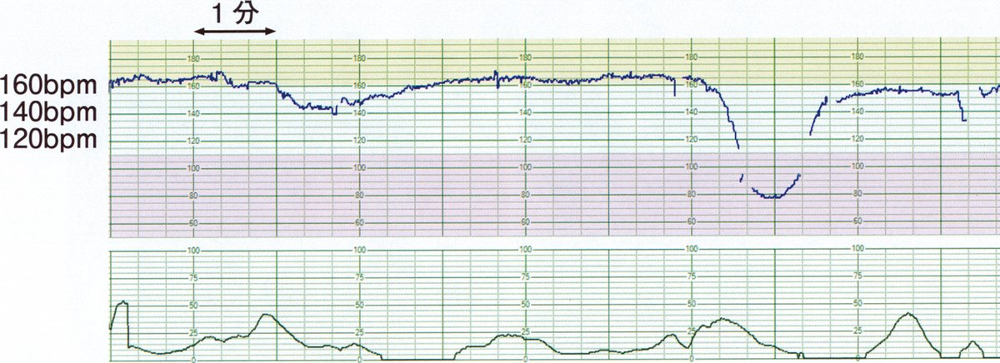
ａ 吸引分娩
ｂ 経過観察
ｃ 子宮収縮薬投与
ｄ 帝王切開
ｅ ベタメタゾン投与
✅
ｄ 帝王切開
持続的な子宮収縮・少量出血・胎盤肥厚像・血圧上昇から常位胎盤早期剝離であり、直ちに帝王切開を行う。
📸 胎児心拍数陣痛図の読み方
実際の記録は参照できないが、常位胎盤早期剝離では子宮収縮曲線が持続的に高い基線を示し（子宮の板状硬）、胎児心拍数は基線細変動の減少・遅発一過性徐脈・遷延徐脈を呈する。すなわち胎児機能不全の所見である。🚨 常位胎盤早期剝離
常位胎盤早期剝離〈abruptio placentae〉：正常位置に付着した胎盤が児娩出前に子宮壁から剝離する病態。母児ともに致死的。典型的な所見
・持続する（間欠のない）強い腹痛
・子宮の板状硬（子宮硬直）・圧痛
・性器出血（外出血は少ないことが多い＝血液は胎盤後血腫として子宮内に貯留）
・超音波で胎盤の肥厚像（＝胎盤後血腫）
・胎児心拍数陣痛図で基線細変動の減少・遅発一過性徐脈・徐脈（胎児機能不全）
・進行すればDIC（フィブリノゲン低下・FDP上昇・血小板減少）
危険因子：妊娠高血圧症候群・喫煙・外傷（腹部打撲）・絨毛膜羊膜炎・前期破水・子宮内胎児発育不全・既往
治療：診断がつき次第、母児救命のため直ちに帝王切開（＋DIC治療）。胎児死亡後で母体が安定していれば経腟分娩を選ぶこともある。
📊 本例の所見
・2時間前からの「痛みを伴う持続的な」子宮収縮 → 間欠のない疼痛・血圧148/92mmHg → 妊娠高血圧症候群（早剝の最大の危険因子）
・少量の性器出血 → 外出血が少ないのが早剝の特徴
・胎盤の肥厚像 → 胎盤後血腫
これらを合わせて常位胎盤早期剝離と診断し、直ちに帝王切開を行う（母児救命のため一刻を争う）。
□ 選択肢の検討
| 選択肢 | 評価 |
|---|---|
| ａ 吸引分娩 | 不可。子宮口4cm開大・児頭下降度SP−2cmで、吸引分娩の要件（子宮口全開大・児頭下降・破水）を満たさない |
| ｂ 経過観察 | 禁忌。数十分で胎児死亡・母体DICに至る |
| ｃ 子宮収縮薬投与 | 禁忌。剝離を助長し胎児をさらに危険にさらす |
| ｄ 帝王切開 | 正しい。母児救命のため直ちに施行 |
| ｅ ベタメタゾン投与 | 不適切。効果発現に24〜48時間を要し、一刻を争う本例では待てない |
🎯 国試ポイント
産科出血の鑑別は「痛いか痛くないか」が第一の軸：・有痛性（持続痛）＋板状硬＋胎児機能不全 → 常位胎盤早期剝離
・無痛性の反復する出血 → 前置胎盤
・破水直後の無痛性大量出血＋急激な胎児徐脈 → 前置血管破裂
Q.189(119D-74)★📷 画像2択93%
38 歳の経産婦（4 妊2 産）。妊娠28 週で周産期管理を目的に自宅近くの医療機関から周産期母子医療センターを紹介され受診した。30 歳および33 歳時に、それぞれ骨盤位および既往帝王切開の適応で選択的帝王切開術が施行され、36 歳時に稽留流産に対し子宮内容除去術が施行されている。今回は、続発性不妊症に対し生殖補助医療が実施され、妊娠した。妊娠32 週に行われた骨盤MRI のT2 強調矢状断像を示す。
考えられるのはどれか。2 つ選べ。
考えられるのはどれか。2 つ選べ。
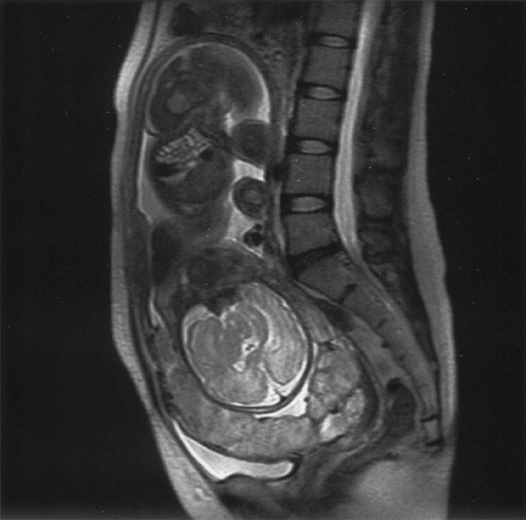
ａ 前置血管
ｂ 前置胎盤
ｃ 癒着胎盤
ｄ 絨毛膜下血腫
ｅ 常位胎盤早期剝離
✅
ｂ 前置胎盤
ｃ 癒着胎盤
帝王切開2回と子宮内容除去術の既往があり、MRIで胎盤が内子宮口を覆い子宮筋層へ侵入する前置胎盤・癒着胎盤である。
📸 骨盤MRI T2強調矢状断像の読み方
実際の画像は参照できないが、以下の所見を読む。前置胎盤：胎盤が内子宮口を覆っている（矢状断で子宮下節〜内子宮口を胎盤実質が横断する）
癒着胎盤を示唆するMRI所見：
・子宮胎盤境界（子宮筋層と胎盤の間の低信号線）の消失
・胎盤内のT2低信号帯（dark intraplacental band）
・子宮筋層の菲薄化・胎盤の子宮外への膨隆（bulging）
・胎盤内の異常血管増生
🩸 前置胎盤と癒着胎盤
前置胎盤：胎盤が内子宮口を覆う、または近接する。無痛性の反復する性器出血が特徴。内診は禁忌（大出血を招く）。分娩は帝王切開。癒着胎盤〈placenta accreta spectrum〉：脱落膜（Nitabuch層）の欠損により絨毛が子宮筋層に直接侵入し、胎盤が自然に剝離しない。
・accreta（癒着胎盤）：筋層表面に接着
・increta（嵌入胎盤）：筋層内へ侵入
・percreta（穿通胎盤）：筋層を貫通し漿膜・膀胱へ
分娩時に胎盤が剝がれず制御不能の大量出血 → 子宮全摘に至る。
危険因子（本例はすべて該当）：
・帝王切開の既往（2回）
・子宮内容除去術（掻爬）の既往
・前置胎盤の合併（帝切既往＋前置胎盤で癒着胎盤の頻度が跳ね上がる）
・高齢・多産・生殖補助医療
□ 選択肢の検討
| 選択肢 | 評価 |
|---|---|
| ａ 前置血管 | 臍帯血管が卵膜上を走行し内子宮口を横切る病態。破水時に血管が破綻し急激な胎児失血を来す。MRIより経腟カラードプラで診断 |
| ｂ 前置胎盤 | 正しい。胎盤が内子宮口を覆う |
| ｃ 癒着胎盤 | 正しい。帝切2回＋掻爬既往＋前置胎盤という最強の危険因子 |
| ｄ 絨毛膜下血腫 | 妊娠初期の切迫流産に伴う所見。妊娠32週の病態ではない |
| ｅ 常位胎盤早期剝離 | 否定的。腹痛・子宮硬直・胎児機能不全がなく、無症状で紹介受診 |
🎯 国試ポイント
「帝王切開の既往＋今回前置胎盤」＝癒着胎盤を強く疑う（帝切1回で約3%、2回で約10%、3回以上で40%超）。術前にMRI・超音波で評価し、大量出血に備えた自己血貯血・動脈バルーン留置・子宮全摘の同意取得・輸血準備を行ったうえで計画的帝王切開とする。
Q.190(119F-41)★📷 画像73%
35 歳の初妊婦（1 妊0 産）。妊娠34 週4 日、妊婦健康診査のため来院した。これまで定期的に妊婦健康診査を受けている。身長158cm、体重59kg（非妊時51kg）。血圧110/78mmHg。下腿に軽度の圧痕性浮腫を認める。腟鏡診で性器出血を認めない。腹部超音波検査では胎児発育と羊水量に異常を認めない。母子健康手帳の記載内容（A）と胎児心拍数陣痛図（B）とを示す。
妊婦への説明で適切なのはどれか。
妊婦への説明で適切なのはどれか。
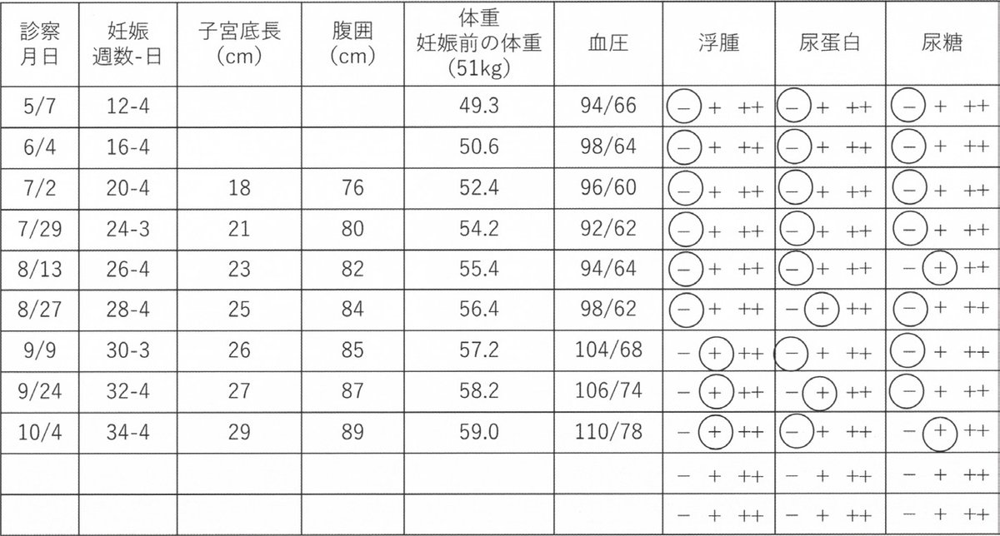
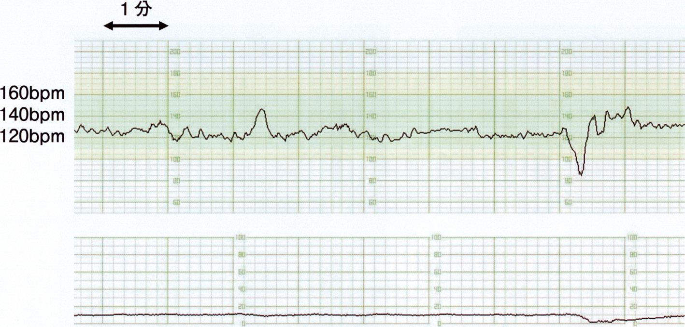
ａ 「入院が必要です」
ｂ 「血液検査が必要です」
ｃ 「妊娠経過は順調です」
ｄ 「塩分を制限しましょう」
ｅ 「体重が過度に増加しています」
✅
ｃ 「妊娠経過は順調です」
体重増加8kg・血圧正常・浮腫のみで、胎児心拍数陣痛図もreactiveであり、妊娠経過は順調である。
📸 母子健康手帳とCTGの読み方
実際の画像は参照できないが、記載内容から以下が読み取れる。（A）母子健康手帳：血圧・尿蛋白・尿糖・体重・子宮底長がいずれも正常範囲で推移
（B）胎児心拍数陣痛図：心拍数基線110〜160bpm、基線細変動あり、一過性頻脈あり（reactive）、一過性徐脈なし → 胎児well-being良好
📊 本例の評価
・体重増加 59 − 51 ＝ 8kg非妊時BMI ＝ 51 ÷ 1.58² ≒ 20.4（普通体重）。推奨体重増加量は10〜13kgなので、妊娠34週で8kgは適切〜やや少ない
・血圧110/78mmHg → 正常（妊娠高血圧症候群は140/90mmHg以上）
・下腿の軽度圧痕性浮腫 → 妊娠後期の生理的浮腫。増大子宮による下大静脈圧迫と膠質浸透圧の低下による。浮腫だけでは妊娠高血圧症候群と診断しない（2005年に浮腫は診断基準から削除）
・尿蛋白・胎児発育・羊水量いずれも正常
したがって妊娠経過は順調と説明してよい。
□ 選択肢の検討
| 選択肢 | 評価 |
|---|---|
| ａ 「入院が必要です」 | 不要。異常所見がない |
| ｂ 「血液検査が必要です」 | 不要。HELLP症候群・妊娠高血圧腎症を疑う所見がない |
| ｃ 「妊娠経過は順調です」 | 正しい |
| ｄ 「塩分を制限しましょう」 | 不適切。妊娠高血圧症候群でも極端な塩分制限は推奨されない（7〜8g/日程度）。本例は血圧正常で制限の根拠がない |
| ｅ 「体重が過度に増加しています」 | 誤り。普通体重の妊婦で妊娠34週に8kgは適切 |
🎯 国試ポイント
妊娠中の推奨体重増加量（日本産科婦人科学会 2021）：・低体重（BMI＜18.5）：12〜15kg ・普通体重（18.5〜25）：10〜13kg
・肥満Ⅰ度（25〜30）：7〜10kg ・肥満Ⅱ度以上（≧30）：個別対応（上限5kg目安）
妊娠後期の下腿浮腫は生理的で、単独では病的意義をもたない。
Q.191(118A-67)★📷 画像96%
34歳の初産婦（1妊0産）。妊娠39週4日の午前6時に陣痛発来のため入院した。これまでの妊娠経過は順調であった。身長148cm、体重56kg（非妊時48kg）。内診所見は子宮口開大度4cm、展退度70％、先進部は児頭であった。来院時の胎児心拍数陣痛図にて胎児心拍数波形に異常は認めず、5 分毎の子宮収縮を認めた。午後4 時に子宮口は全開大した。午後6 時50 分に破水し、内診で児頭下降度はSP ＋4cm、0 時方向に小泉門を触知した。この時点での胎児心拍数陣痛図を示す。
対応で適切なのはどれか。
対応で適切なのはどれか。
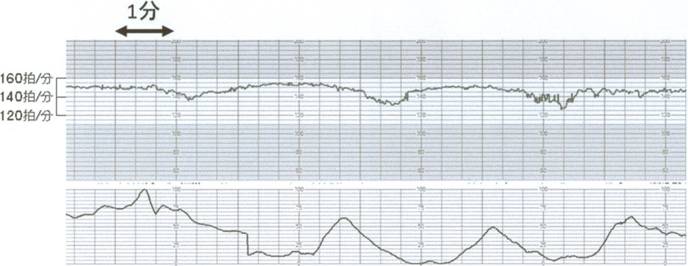
ａ 吸引分娩
ｂ 帝王切開
ｃ 抗菌薬投与
ｄ 子宮収縮薬投与
ｅ 子宮収縮抑制薬投与
✅
ａ 吸引分娩
子宮口全開大・児頭下降度SP＋4cm・破水済で吸引分娩の要件を満たし、胎児機能不全があれば急速遂娩する。
📸 胎児心拍数陣痛図の読み方
実際の記録は参照できないが、分娩第2期遷延（全開大から約3時間）の時点で遅発一過性徐脈や変動一過性徐脈の反復、基線細変動の減少といった胎児機能不全を示す所見が現れていると読む。この場合、速やかに児を娩出させる（急速遂娩）必要がある。🔧 吸引分娩の適応と要件
適応：分娩第2期遷延・停止、胎児機能不全、母体疲労、母体合併症（心疾患等）でいきみを避けたい場合要件（すべて満たすこと）
① 子宮口全開大 （本例：午後4時に全開大 ✓）
② 破水している （本例：午後6時50分に破水 ✓）
③ 児頭が十分下降している（SP＋2cm以上、station ≧＋2） （本例：SP＋4cm ✓）
④ 児頭骨盤不均衡〈CPD〉がない
⑤ 胎位・回旋が正常（児頭が先進部）
（本例：0時方向に小泉門＝第1後頭位で正常な回旋（小泉門が恥骨側） ✓）
⑥ 膀胱を空にする
要件を満たさない、あるいは吸引3回で娩出できない場合は帝王切開へ移行する。
□ 選択肢の検討
| 選択肢 | 評価 |
|---|---|
| ａ 吸引分娩 | 正しい。全開大・破水・SP＋4cm・回旋正常で要件を満たす。児頭がここまで下降していれば経腟的に急速遂娩できる |
| ｂ 帝王切開 | 不適切。児頭がSP＋4cmまで下降しており、この段階での帝王切開はむしろ児頭の引き出しが困難で危険。吸引分娩で速やかに娩出できる |
| ｃ 抗菌薬投与 | 不適切。発熱・感染徴候がない |
| ｄ 子宮収縮薬投与 | 不適切。胎児機能不全がある状況で陣痛を強めれば胎児をさらに危険にさらす |
| ｅ 子宮収縮抑制薬投与 | 不適切。分娩第2期であり陣痛を止める意味がない |
🎯 国試ポイント
内診での回旋の読み方：小泉門（三角形、矢状縫合とλ縫合が合流）が恥骨側（0時方向）＝正常な第1後頭位。大泉門（菱形）を触れれば反屈位（前頭位・額位・顔位）で難産のもと。
吸引分娩と鉗子分娩の要件は同じ（全開大・破水・児頭下降・CPDなし）。
Q.192(118D-29)★📷 画像77%
32 歳の経産婦（2 妊1 産）。妊娠35 週1 日、性器出血を主訴に救急車で搬入された。妊娠33 週まで別の医療機関で妊婦健康診査を受けていた。里帰り分娩の目的で当院を受診予定であったが、性器出血を自覚したため救急車を要請した。意識は清明。体温37.2℃。心拍数92/ 分、整。血圧108/72mmHg。呼吸数20/ 分。SpO2 98％（room air）。腟鏡診で外子宮口から出血が持続し、総量が約200mL であった。胎児心拍数陣痛図にて胎児の状態は良好であり、10 分間に1 回の子宮収縮を認める。来院時の経腟超音波像（矢印は内子宮口）を示す。
適切な対応はどれか。
適切な対応はどれか。
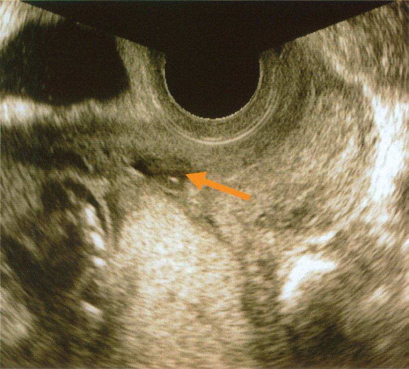
ａ 輸 血
ｂ 体位変換
ｃ 緊急帝王切開
ｄ 双手子宮圧迫
ｅ 硫酸マグネシウム投与
✅
ｃ 緊急帝王切開
前置胎盤からの出血が持続しており（警告出血が200mLに達する）、緊急帝王切開で娩出する。
📸 経腟超音波像の読み方
実際の画像は参照できないが、矢印で示された内子宮口を胎盤実質が覆っている像であり、前置胎盤と診断される。前置胎盤の分類：
・全前置胎盤：内子宮口を完全に覆う
・部分前置胎盤：内子宮口を部分的に覆う
・辺縁前置胎盤：胎盤辺縁が内子宮口に達する
（内子宮口から2cm以内に達するが覆わないものは低置胎盤）
🩸 前置胎盤の管理
特徴：無痛性・反復する性器出血（警告出血）。子宮下節が伸展する妊娠中期以降に胎盤が剝がれて出血する。内診（指診）は禁忌（胎盤を触れて大出血を招く）。診断は経腟超音波（プローブは頸管に触れない）。
管理
・出血が少量で胎児が未熟 → 入院・安静・子宮収縮抑制薬で妊娠を延長
・大量出血・出血持続・母体循環動態の不安定・胎児機能不全 → 緊急帝王切開
・無症状なら妊娠37週前後の選択的帝王切開
本例は出血総量200mLで、なお子宮口から出血が持続しており、妊娠35週1日と児の成熟もある程度期待できる。これ以上待てば大量出血・母体ショックに至るため緊急帝王切開を選択する。
□ 選択肢の検討
| 選択肢 | 評価 |
|---|---|
| ａ 輸血 | バイタルは安定（血圧108/72mmHg）しており、出血200mLでは直ちに輸血の適応ではない。ただし手術に備えた輸血準備は必要 |
| ｂ 体位変換 | 無効。変動一過性徐脈（臍帯圧迫）に対する処置であり、前置胎盤の出血には無意味 |
| ｃ 緊急帝王切開 | 正しい。出血が持続しており、これ以上妊娠を延長できない |
| ｄ 双手子宮圧迫 | 不適切。分娩後の弛緩出血に対する止血法。児が子宮内にいる状態では行わない |
| ｅ 硫酸マグネシウム投与 | 不適切。子宮収縮抑制・子癇予防に用いるが、出血が持続する前置胎盤では妊娠延長を目指す状況ではない |
🎯 国試ポイント
前置胎盤で警告出血をみたら入院・安静・輸血準備・ステロイド（34週未満）が基本だが、出血が持続または大量なら週数にかかわらず緊急帝王切開。前置胎盤に内診（指診）は禁忌は最頻出（Q211も同様の場面）。
Q.193(118D-43)★📷 画像37%
32歳の初産婦（1妊0産）。妊娠32週、水様帯下を自覚し来院した。これまで妊婦健康診査で異常を指摘されていない。体温36.9℃。脈拍80/ 分、整。血圧110/80mmHg。内診所見は子宮口開大度1.5cm、展退度30％、先進部は児頭であった。腟鏡診で羊水の流出を認める。胎児心拍数陣痛図を示す。
適切な対応はどれか。
適切な対応はどれか。
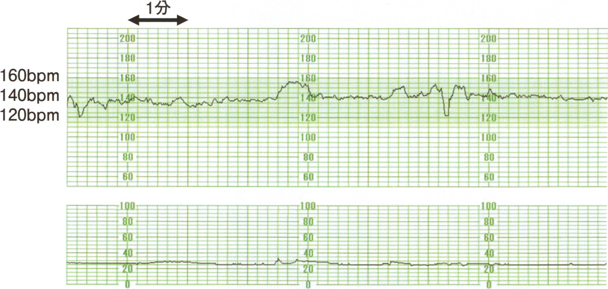
ａ 頸管縫縮術
ｂ 緊急帝王切開
ｃ オキシトシン投与
ｄ ベタメタゾン投与
ｅ 塩酸リトドリン投与
✅
ｄ ベタメタゾン投与
妊娠32週の前期破水であり、児の肺成熟を促すためベタメタゾンを投与して妊娠を延長させる。
📸 胎児心拍数陣痛図の読み方
実際の記録は参照できないが、心拍数基線正常・基線細変動あり・一過性徐脈なし・子宮収縮は乏しいと読む。胎児機能不全も臨床的絨毛膜羊膜炎（母体発熱・頻脈、胎児頻脈）もない状態である。💧 妊娠34週未満の前期破水〈PPROM〉の管理
前期破水は陣痛発来前に卵膜が破綻して羊水が流出する状態。本例は妊娠32週で、感染徴候（発熱・頻脈・子宮圧痛）がなく、胎児機能不全もない。妊娠34週未満のPPROMでは、児の未熟性が最大の問題であり、感染徴候がなければ妊娠を延長して児の成熟を待つ（expectant management）。
具体的には：
① 副腎皮質ステロイド（ベタメタゾン）の母体筋注
妊娠22〜34週で1週間以内の分娩が予測される場合に胎児肺サーファクタント産生を促進 → 新生児呼吸窮迫症候群〈RDS〉・脳室内出血・壊死性腸炎を減らす
24時間ごとに2回筋注し、投与開始から24〜48時間で効果が最大
② 抗菌薬投与（潜伏期の延長と絨毛膜羊膜炎の予防）
③ 子宮収縮抑制薬（ステロイドの効果が出るまでの時間を稼ぐ）
④ 感染徴候・胎児機能不全の監視（体温・脈拍・白血球・CRP・CTG）
絨毛膜羊膜炎を発症したら、週数にかかわらず直ちに分娩させる。
□ 選択肢の検討
| 選択肢 | 評価 |
|---|---|
| ａ 頸管縫縮術 | 禁忌。破水後の縫縮は感染を子宮内に閉じ込める |
| ｂ 緊急帝王切開 | 不適切。胎児機能不全・感染徴候がなく、妊娠32週での分娩は児の未熟性による予後不良 |
| ｃ オキシトシン投与 | 不適切。陣痛促進は妊娠を終了させる方向で、妊娠32週では不利 |
| ｄ ベタメタゾン投与 | 正しい。胎児肺成熟促進 |
| ｅ 塩酸リトドリン投与 | 子宮収縮抑制薬。本例は子宮収縮が主症状ではなく、ステロイドの効果発現までの時間稼ぎとして併用されることはあるが、「最も適切な対応」はベタメタゾン |
🎯 国試ポイント
正答率37%と低い。妊娠34週未満のPPROM → ベタメタゾン＋抗菌薬＋（子宮収縮抑制薬）で待機、妊娠34週以降のPPROM → 分娩へが原則。破水の診断：BTB試験紙が青変（羊水は弱アルカリ性）・羊歯状結晶・IGFBP-1・癌胎児性フィブロネクチン。
Q.194(115F-58)★📷 画像2択88%
28 歳の経産婦（2 妊1 産）。妊娠31 週0 日、下腹部痛と性器出血を主訴に来院した。前回の妊娠は、妊娠32 週0 日で経腟分娩した。身長154cm、体重46kg（非妊時40kg）。体温36.6℃、脈拍72/ 分、整。胎位は頭位で推定胎児体重は2,000g。子宮に圧痛を認めない。腟鏡診にて腟内に少量の血液付着を認めるが、持続的な出血や羊水流出を認めない。経腟超音波断層法検査所見（A）及び胎児心拍数陣痛図（B）を示す。
適切な対応はどれか。2 つ選べ。
適切な対応はどれか。2 つ選べ。
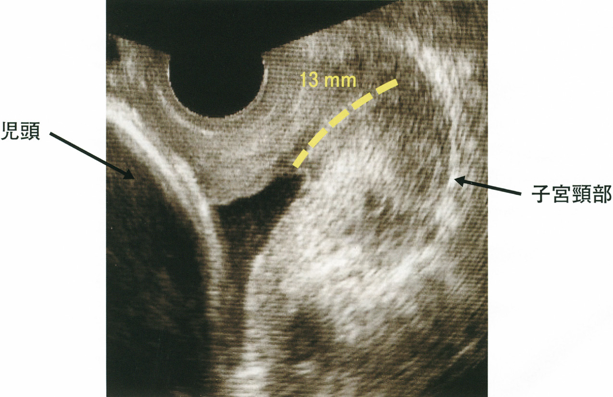
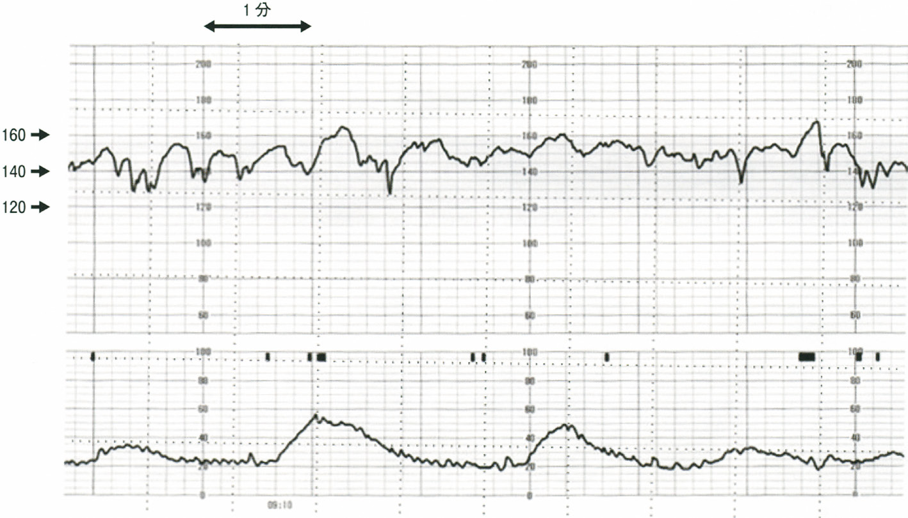
ａ 抗菌薬投与
ｂ 緊急帝王切開
ｃ 子宮頸管縫縮術
ｄ 子宮収縮抑制剤投与
ｅ 副腎皮質ステロイド投与
✅
ｄ 子宮収縮抑制剤投与
ｅ 副腎皮質ステロイド投与
早産既往のある妊娠31週の切迫早産であり、子宮収縮抑制薬で妊娠を延長しつつ副腎皮質ステロイドで胎児肺成熟を促す。
📸 画像の読み方
（A）経腟超音波：頸管長の短縮（25mm未満）と内子宮口のfunneling（B）胎児心拍数陣痛図：規則的な子宮収縮を認めるが、胎児心拍数波形は正常（基線・細変動・一過性頻脈あり、一過性徐脈なし）
これらと下腹部痛・少量の性器出血（産徴）から切迫早産と診断する。
子宮に圧痛がなく持続的出血もないため常位胎盤早期剝離は否定的、羊水流出がないため前期破水も否定的。
💊 切迫早産の治療（妊娠34週未満）
① 子宮収縮抑制薬（塩酸リトドリン、硫酸マグネシウム）子宮収縮を抑えて妊娠を延長させる
② 副腎皮質ステロイド（ベタメタゾン）
妊娠22〜34週で1週間以内の早産が予測される場合、胎児肺成熟を促進し新生児呼吸窮迫症候群〈RDS〉・脳室内出血・壊死性腸炎・新生児死亡を減らす
24時間ごとに2回筋注（効果は投与開始24〜48時間後に最大）
本例は前回妊娠が妊娠32週での早産＝早産既往があり、早産のリスクが高い（最も強い予測因子）。
□ 選択肢の検討
| 選択肢 | 評価 |
|---|---|
| ａ 抗菌薬投与 | 絨毛膜羊膜炎を疑う所見（発熱・子宮圧痛・白血球増多・CRP上昇）がない。本例では第一選択にならない |
| ｂ 緊急帝王切開 | 不適切。胎児心拍数波形は正常で胎児機能不全がない。妊娠31週での分娩は児の未熟性による予後不良 |
| ｃ 子宮頸管縫縮術 | 不適切。すでに子宮収縮・産徴があり、この段階での縫縮は感染・破水のリスク。予防的縫縮は妊娠12〜16週 |
| ｄ 子宮収縮抑制剤投与 | 正しい。妊娠を延長させる |
| ｅ 副腎皮質ステロイド投与 | 正しい。妊娠31週で胎児肺成熟を促進 |
🎯 国試ポイント
切迫早産の最大の危険因子は早産の既往。ほかに多胎・頸管長短縮・細菌性腟症／絨毛膜羊膜炎・子宮形態異常・羊水過多・喫煙・低体重。本例は非妊時体重40kg（BMI 16.9の低体重）も危険因子である。
Q.195(114A-65)★2択57%
40 歳の経産婦（6 妊5 産）。妊娠34 週3 日に胎動消失を主訴に来院した。妊娠経過は順調であったが、妊娠30 週の妊婦健康診査後、多忙と経済的理由のため受診していなかった。これまで計5 回の経腟自然分娩の既往がある。身長152cm、体重62kg。体温36.8℃。脈拍84/ 分、整。血圧116/72mmHg。子宮収縮は認められなかった。腹部超音波検査を施行したところ、胎児心拍を認めなかった。推定胎児体重は1,500g で妊娠30 週の妊婦健康診査時の推定体重とほぼ変わらなかった。胎盤に異常所見はなかった。
直ちに行う血液検査項目として適切なのはどれか。2 つ選べ。
直ちに行う血液検査項目として適切なのはどれか。2 つ選べ。
ａ FDP
ｂ 血小板数
ｃ 抗リン脂質抗体
ｄ 胎児ヘモグロビン
ｅ 間接Coombs 試験
✅
ａ FDP
ｂ 血小板数
子宮内胎児死亡が長期化すると死胎児症候群としてDICを発症するため、FDPと血小板数を直ちに測定する。
🩸 子宮内胎児死亡〈IUFD〉と死胎児症候群
本例は妊娠34週3日で胎児心拍を認めず＝子宮内胎児死亡。推定体重が妊娠30週時とほぼ変わらないことから、胎児死亡は数週間前に起こっていた（死児が長期間子宮内に留まっている）と推定される。死胎児症候群〈dead fetus syndrome〉
死亡した胎児・胎盤の壊死組織から組織トロンボプラスチン（組織因子）が母体循環へ持続的に流入し、慢性DIC（消費性凝固障害）を惹起する。
一般に胎児死亡から4週間を超えると発症リスクが高まる。
直ちに評価すべきはDICの有無であり、血小板数（消費による減少）・FDP／D-dimer（線溶亢進による上昇）・フィブリノゲン（消費による低下）・PT／APTTを測定する。
DICがあれば補充療法（新鮮凍結血漿・血小板・フィブリノゲン製剤）を行いつつ、できるだけ早く分娩（子宮内容の除去）させる。
□ 選択肢の検討
| 選択肢 | 評価 |
|---|---|
| ａ FDP | 正しい。線溶亢進の指標。DICの診断に必須 |
| ｂ 血小板数 | 正しい。消費による減少。DICの診断に必須 |
| ｃ 抗リン脂質抗体 | 胎児死亡の原因検索としては重要だが、「直ちに」行うべき緊急検査ではない（結果が出るのに時間がかかり、当面の治療方針を変えない） |
| ｄ 胎児ヘモグロビン | 不適切。母体血中の胎児ヘモグロビン（HbF）を測定するのは胎児母体間輸血症候群〈Kleihauer-Betke試験〉の診断。本例は胎盤に異常なく、また緊急性がない |
| ｅ 間接Coombs 試験 | 血液型不適合妊娠（胎児水腫）の検索。胎児水腫の記載がなく、緊急性もない |
🎯 国試ポイント
産科DICの3大原因：常位胎盤早期剝離・羊水塞栓症・死胎児症候群（＋大量出血、HELLP症候群、敗血症）。産科DICではフィブリノゲンの低下が鋭敏な指標（妊娠中は生理的に400〜600mg/dLと高値なので、「正常値」でも相対的低下を意味しうる。200mg/dL未満は明らかな異常）。
Q.196(114B-10)★
胎児心拍数陣痛図において、胎児の健康状態の悪化が最も懸念される所見はどれか。
ａ 一過性頻脈
ｂ 早発一過性徐脈
ｃ 変動一過性徐脈
ｄ 基線細変動増加
ｅ 基線細変動消失
✅
ｅ 基線細変動消失
基線細変動の消失は胎児中枢神経の低酸素・アシドーシスを意味し、最も危険な所見である。
💓 基線細変動〈baseline variability〉
基線細変動とは胎児心拍数基線の細かい揺らぎ（1分間に2サイクル以上の変動）。交感神経と副交感神経が拮抗して心拍を微調整している結果であり、胎児の中枢神経系が正常に機能していることの証である。
分類
・消失：肉眼的に認められない（＜2bpm）→ 最も危険
・減少：≦5bpm
・中等度（正常）：6〜25bpm
・増加：＞25bpm
基線細変動の消失は、胎児の中枢神経が低酸素・アシドーシスにより機能不全に陥ったことを意味し、一過性徐脈を伴えば直ちに急速遂娩を考慮する。
なお胎児の睡眠周期・麻薬性鎮痛薬・硫酸マグネシウムでも一過性に減少するため、継続監視と音響刺激試験で鑑別する。
□ 胎児心拍数陣痛図の所見
| 所見 | 定義 | 意義 | 原因・解釈 |
|---|---|---|---|
| 心拍数基線 | 110〜160bpm | 正常 | ＜110＝徐脈、＞160＝頻脈（頻脈は感染・母体発熱を示唆） |
| 基線細変動 | 6〜25bpm（中等度） | 正常 | 消失（＜2bpm）は最も危険。中枢神経の低酸素・アシドーシス |
| 一過性頻脈 | 15bpm以上・15秒以上の上昇 | 胎児健常のサイン | これがあればreactive |
| 早発一過性徐脈 | 子宮収縮と同時に始まり同時に戻る | 生理的 | 児頭圧迫→迷走神経反射 |
| 変動一過性徐脈 | 急激に下降し急激に回復。子宮収縮との関係が一定しない | 要注意 | 臍帯圧迫 |
| 遅発一過性徐脈 | 子宮収縮より遅れて始まり遅れて戻る | 危険 | 子宮胎盤循環不全（早剝・過強陣痛・妊娠高血圧症候群・胎盤機能不全） |
| 遷延一過性徐脈 | 2分以上10分未満続く徐脈 | 危険 | 臍帯脱出・過強陣痛・母体低血圧 |
| サイナソイダルパターン | 規則的な正弦波様 | 極めて危険 | 高度胎児貧血（血液型不適合・パルボ・胎児母体間輸血） |
□ 選択肢の検討
| 選択肢 | 評価 |
|---|---|
| ａ 一過性頻脈 | 胎児健常のサイン。これがあればreactive |
| ｂ 早発一過性徐脈 | 生理的。児頭圧迫による迷走神経反射。児の状態は良好 |
| ｃ 変動一過性徐脈 | 臍帯圧迫による。軽度なら生理的だが、高度・反復すれば胎児低酸素を来す |
| ｄ 基線細変動増加 | 一過性の胎児運動・軽度の低酸素に対する交感神経反応。単独では危険性は低い |
| ｅ 基線細変動消失 | 最も危険。中枢神経の低酸素・アシドーシス |
💡 覚え方
「細変動があれば、まだ大丈夫」。一過性徐脈があっても細変動が保たれていれば胎児のアシドーシスは軽度。逆に細変動が消失したら、たとえ徐脈がなくても危険。
Q.197(114C-59)★📷 画像2択66%
25 歳の初妊婦（1 妊0 産）。妊娠34 週4 日に周産期管理のため、自宅近くの産科診療所から紹介されて来院した。既往歴、家族歴に特記すべきことはない。身長160cm、体重59kg。体温36.6℃。脈拍80/ 分、整。血圧120/72mmHg。内診時の帯下ではBTB 試験紙の色の変化はなかった。腹部超音波検査で胎児は頭位で、推定体重は2,050g、羊水指数〈AFI〉は3.8cm だった。臍帯断面の超音波像（A）及びノンストレステスト〈NST〉の結果（B）を示す。
説明として正しいのはどれか。2 つ選べ。
説明として正しいのはどれか。2 つ選べ。
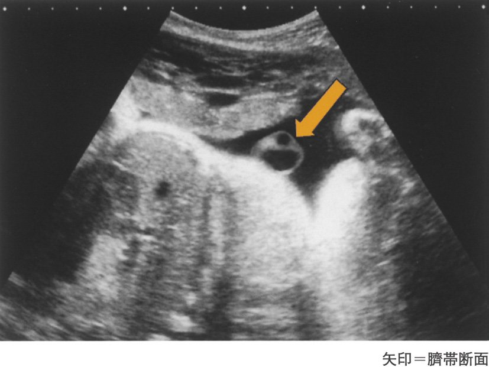
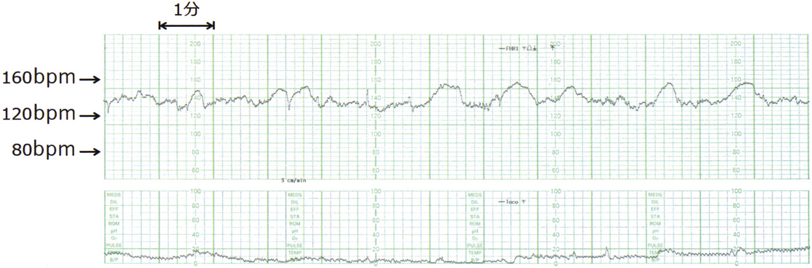
ａ 「絶対安静が必要です」
ｂ 「前期破水が疑われます」
ｃ 「羊水過少が疑われます」
ｄ 「今日中に分娩にする必要があります」
ｅ 「赤ちゃんの先天的な病気の精密検査が必要です」
✅
ｃ 「羊水過少が疑われます」
ｅ 「赤ちゃんの先天的な病気の精密検査が必要です」
AFI 3.8cmで羊水過少があり、臍帯断面像は単一臍帯動脈を示唆するため胎児の先天異常の精査が必要である。
📸 画像の読み方
（A）臍帯断面の超音波像：正常な臍帯は動脈2本＋静脈1本の3本の血管（Mickey Mouse sign）が描出される。本例では動脈1本＋静脈1本の2血管＝単一臍帯動脈〈single umbilical artery, SUA〉と読む。（B）NST：reactive（一過性頻脈あり）と読める。すなわち現時点で胎児のwell-beingは保たれており、緊急の分娩は要しない。
💧 羊水過少と単一臍帯動脈
羊水過少：AFI 3.8cm（基準5〜25cm）は明らかな羊水過少。BTB試験紙の色の変化がない＝破水は否定的（羊水は弱アルカリ性でBTBが青変する）。胎児発育も推定体重2,050gで妊娠34週相当（−1.5SD以内）なので著明なFGRでもない。
したがって羊水過少の原因として胎児の腎・尿路系の異常（尿産生の低下）を考える必要がある。
単一臍帯動脈〈SUA〉：全妊娠の約1%。腎・尿路系奇形、心奇形、染色体異常（18トリソミー等）、FGRの合併率が高い。
羊水過少＋SUAという組合せは胎児腎尿路系の形態異常を強く示唆し、胎児形態の精密検査（胎児超音波スクリーニング、必要なら胎児MRI・染色体検査）が必要である。
□ 選択肢の検討
| 選択肢 | 評価 |
|---|---|
| ａ 「絶対安静が必要です」 | 不適切。安静で羊水量は増えない。子宮収縮・切迫早産の徴候もない |
| ｂ 「前期破水が疑われます」 | 誤り。BTB試験紙の色の変化がなく破水は否定的 |
| ｃ 「羊水過少が疑われます」 | 正しい。AFI 3.8cm（基準5〜25cm） |
| ｄ 「今日中に分娩にする必要があります」 | 不適切。NSTはreactiveで胎児well-beingは保たれており、妊娠34週で緊急性はない |
| ｅ 「赤ちゃんの先天的な病気の精密検査が必要です」 | 正しい。単一臍帯動脈＋羊水過少は腎尿路系奇形・染色体異常を示唆 |
🎯 国試ポイント
羊水過少をみたら①破水の除外（BTB） ②胎児腎・尿路の評価（腎無形成・後部尿道弁） ③胎盤機能不全（FGR） ④薬剤（ACE阻害薬・NSAIDs）を順に検討する。正常臍帯の断面は3血管（動脈2・静脈1）。2血管なら単一臍帯動脈で合併奇形の検索を。
Q.198(114F-36)★📷 画像74%
36 歳の経産婦（2 妊1 産）。破水感を主訴に来院した。これまでの妊婦健康診査で異常は指摘されていないという。妊娠37 週5 日、起床時に破水感を自覚し受診した。33 歳時に妊娠39 週3 日での自然経腟分娩歴があり、児の発達に異常は認めない。体温36.9℃。脈拍84/ 分、整。血圧132/78mmHg。呼吸数20/ 分。内診にて子宮口は1cm 開大、展退30％、硬度は中等度、先進部は児頭で下降度はSP ＋1cm。羊水の流出を認めた。胎児心拍数陣痛図に異常は認めず、陣痛発来を期待して経過観察のため入院となった。翌朝の胎児心拍数陣痛図を示す。
まず最初に確認すべき項目はどれか。
まず最初に確認すべき項目はどれか。
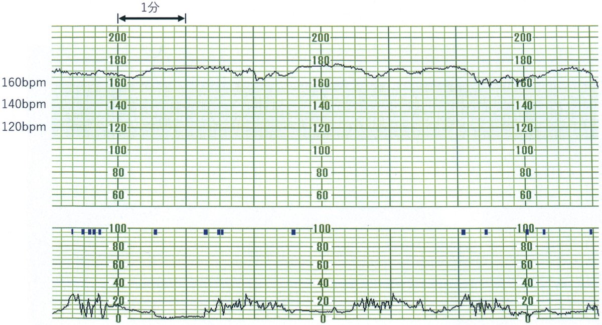
ａ 血 圧
ｂ 体 温
ｃ 白血球数
ｄ 血清CRP 値
ｅ 経皮的酸素飽和度〈SpO2〉
✅
ｂ 体 温
破水後の胎児頻脈は絨毛膜羊膜炎を示唆するため、まず母体の体温を確認する。
📸 胎児心拍数陣痛図の読み方
実際の記録は参照できないが、破水から一夜経過した翌朝のCTGで胎児頻脈（心拍数基線160bpm以上）を認めると読む。前日のCTGには異常がなかったのに翌朝に頻脈が出現した、という変化が重要である。
🦠 破水後の胎児頻脈＝絨毛膜羊膜炎を疑う
前期破水後は腟内細菌の上行感染により絨毛膜羊膜炎〈CAM〉を発症するリスクが時間とともに高まる。胎児頻脈は子宮内感染（CAM）の初期徴候であり、母体の発熱に先行して現れることもある。
臨床的CAMの診断基準（Lencki）
① 母体発熱 38℃以上（必須） ＋ 以下のいずれか1つ以上
② 母体頻脈 100/分以上
③ 子宮の圧痛
④ 腟分泌物の悪臭
⑤ 白血球増多 15,000/µL以上
すなわち診断の起点は母体発熱（体温）であり、胎児頻脈をみたらまず母体の体温を測る。発熱していればCAMと診断し、抗菌薬を投与して妊娠37週5日と正期産なので直ちに分娩させる。
□ 選択肢の検討
| 選択肢 | 評価 |
|---|---|
| ａ 血圧 | 妊娠高血圧症候群の評価。胎児頻脈の説明にならない |
| ｂ 体温 | 正しい。CAMの診断基準の中心。ベッドサイドで即座に測定できる |
| ｃ 白血球数 | CAMの補助診断として有用だが、採血の結果を待つ必要があり「まず最初に」ではない。また妊娠中・分娩時は生理的に白血球が増加する |
| ｄ 血清CRP 値 | 同上。補助診断であり即時性がない |
| ｅ SpO2 | 母体の酸素化の評価。胎児頻脈の説明にならない |
🎯 国試ポイント
胎児頻脈（＞160bpm）の原因：母体発熱・絨毛膜羊膜炎（最重要）・母体甲状腺機能亢進症・β刺激薬（リトドリン）・胎児貧血・胎児不整脈。本例は正期産（37週5日）なので、CAMと診断すれば抗菌薬＋速やかに分娩（未熟児のリスクを考えなくてよい）。
Q.199(109I-42)★📷 画像82%
29 歳の初妊婦。妊娠35 週。胎動減少を主訴に来院した。妊娠34 週まで特に異常を指摘されていない。数日前から胎動が少ないような気がするため受診した。腹痛の自覚はない。身長162cm、体重64kg（非妊時57kg）。体温36.5℃。脈拍84/ 分、整。血圧120/78mmHg。子宮底長32cm、腹囲87cm。下腿に浮腫を認めない。ノンストレステスト〈NST〉実施時の胎児心拍数陣痛図を示す。
今後の方針として適切なのはどれか。
今後の方針として適切なのはどれか。
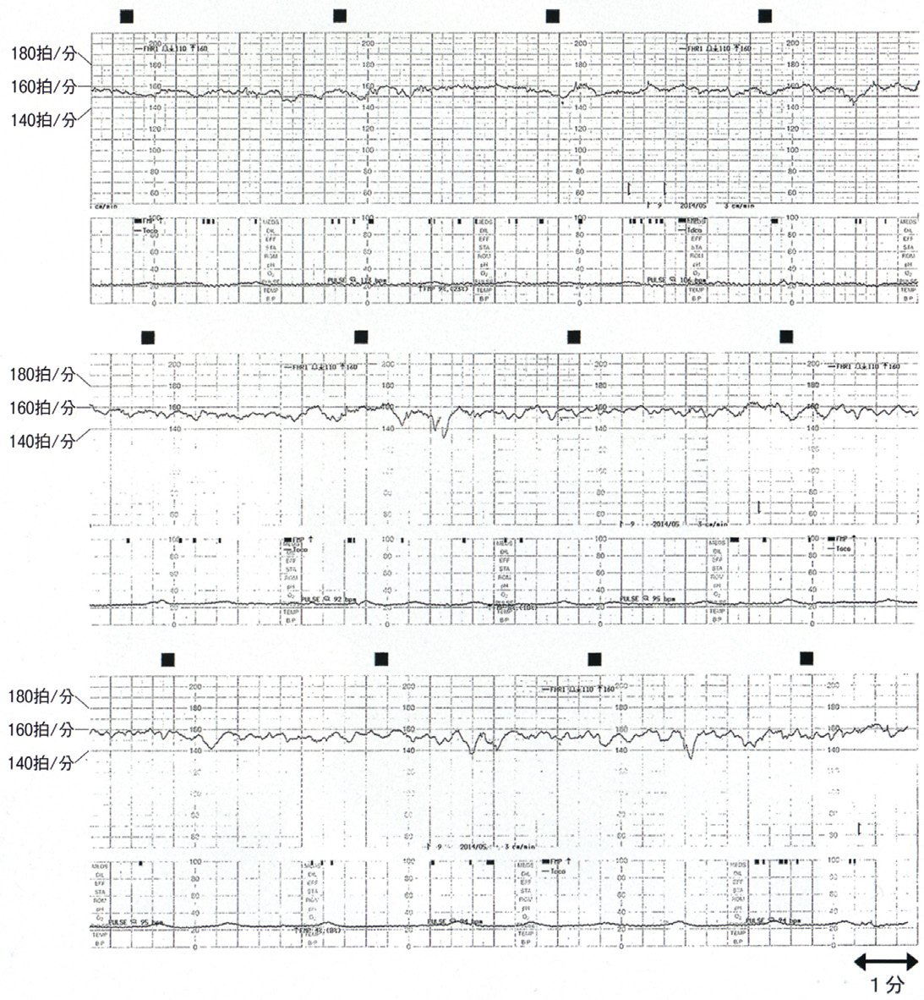
ａ 帰宅させる。
ｂ 分娩誘発を行う。
ｃ 帝王切開を行う。
ｄ 臍帯穿刺により胎児血液検査を行う。
ｅ BPS〈biophysical profile score〉を評価する。
✅
ｅ BPS〈biophysical profile score〉を評価する。
NSTがnon-reactiveであっても直ちに分娩とはせず、まずBPSで胎児well-beingを総合評価する。
📸 胎児心拍数陣痛図の読み方
実際の記録は参照できないが、胎動減少を主訴とする本例のNSTはnon-reactive（20〜40分の観察で一過性頻脈を認めない）と読む。ただし心拍数基線は正常、基線細変動も保たれ、一過性徐脈は認めないとすれば、直ちに胎児が危機的とはいえない。
🔍 non-reactive NSTの解釈とBPS
NSTがnon-reactiveとなる原因には・胎児の睡眠周期（sleep cycle）（正常でも20〜40分続く。最も多い）
・胎児の未熟性（妊娠32週未満では一過性頻脈が出にくい）
・母体の薬剤（鎮静薬・硫酸マグネシウム）
・胎児低酸素・アシドーシス（真の胎児機能不全）
があり、non-reactiveというだけでは偽陽性が非常に多い。
したがってBPS〈biophysical profile score〉で総合評価する。
5項目（各2点、計10点）：
① NST（一過性頻脈） ② 胎児呼吸様運動 ③ 胎動 ④ 胎児筋緊張 ⑤ 羊水量
・8〜10点：胎児well-being良好 → 経過観察
・6点：疑わしい → 24時間以内に再検
・4点以下：胎児機能不全 → 分娩を考慮
BPSで超音波所見（呼吸様運動・胎動・筋緊張・羊水量）を加えることで、単なる睡眠周期による偽陽性を除外できる。
□ 選択肢の検討
| 選択肢 | 評価 |
|---|---|
| ａ 帰宅させる。 | 不適切。胎動減少＋non-reactive NSTを放置してはならない |
| ｂ 分娩誘発を行う。 | 性急。non-reactiveだけでは胎児機能不全と断定できない |
| ｃ 帝王切開を行う。 | 性急。同上。基線細変動が保たれていれば緊急性は低い |
| ｄ 臍帯穿刺により胎児血液検査を行う。 | 侵襲的。胎児死亡・出血・感染のリスクがあり、非侵襲的評価を先に行う |
| ｅ BPS を評価する。 | 正しい。非侵襲的に胎児well-beingを総合評価 |
🎯 国試ポイント
胎児well-beingの評価は非侵襲的なものから段階的に：胎動自覚 → NST → BPS／羊水量 → 臍帯動脈血流波形 → （侵襲的）臍帯穿刺。
低酸素時に失われる順序はNST（一過性頻脈）→ 胎児呼吸様運動 → 胎動 → 筋緊張（羊水量は慢性の指標）。
A
一般問題
Q.200〜Q.236
Q.200(117C-59)📷 画像79%
32 歳の経産婦（2 妊1 産）。妊娠34 週1 日。突然の性器出血を主訴に来院した。第1 子を妊娠38 週で経腟分娩している。体温36.5℃。脈拍84/ 分、整。血圧108/64mmHg。腟鏡診で腟内に凝血塊の貯留を認め、子宮口から血液流出が持続している。計測できた出血量は約250mL である。腹部超音波検査で胎児推定体重2,230g、羊水量は正常。胎児心拍数陣痛図で10 分ごとの子宮収縮を認め、胎児心拍数波形に異常を認めない。経腟超音波像を示す。
適切な説明はどれか。
適切な説明はどれか。
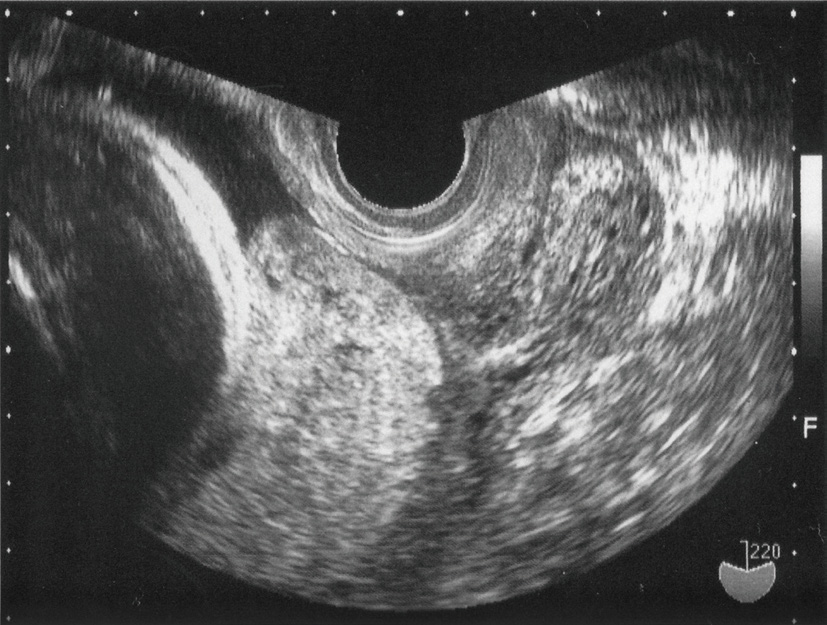
ａ 「緊急帝王切開が必要です」
ｂ 「子宮頸管を縫縮します」
ｃ 「子宮収縮薬を点滴します」
ｄ 「自己血貯血を行います」
ｅ 「副腎皮質ステロイドを筋肉注射します」
✅
ａ 「緊急帝王切開が必要です」
前置胎盤からの出血が持続し250mLに達しており、緊急帝王切開が必要である。
📸 経腟超音波像の読み方
実際の画像は参照できないが、胎盤が内子宮口を覆っている像であり前置胎盤と診断される。「突然の（無痛性の）性器出血」という病歴と合致する。
🩸 前置胎盤の出血への対応
前置胎盤の管理方針は出血量・母体循環動態・胎児の状態・妊娠週数で決まる。・少量の警告出血で自然に止血 → 入院安静・子宮収縮抑制薬・輸血準備・（34週未満なら）副腎皮質ステロイドで妊娠延長
・出血が持続・大量／母体循環動態が不安定／胎児機能不全 → 緊急帝王切開
・無症状のまま経過 → 妊娠37週前後の選択的帝王切開
本例は出血量250mLで、なお子宮口から血液流出が持続している。さらに10分ごとの子宮収縮があり、収縮のたびに子宮下節が伸展して胎盤剝離面が拡大し、出血が加速する。妊娠34週1日で児の生存も十分期待できるため、緊急帝王切開を選択する。
□ 選択肢の検討
| 選択肢 | 評価 |
|---|---|
| ａ 「緊急帝王切開が必要です」 | 正しい。出血が持続しており妊娠を延長できない |
| ｂ 「子宮頸管を縫縮します」 | 無意味。頸管無力症の術式で、前置胎盤の出血には無効。むしろ胎盤を損傷して大出血を招く |
| ｃ 「子宮収縮薬を点滴します」 | 禁忌。前置胎盤で陣痛を起こせば胎盤剝離が進行して大量出血する。経腟分娩は不可能 |
| ｄ 「自己血貯血を行います」 | 不適切。自己血貯血は無症状の前置胎盤で選択的帝王切開に備えて計画的に行うもの。出血が持続する緊急時には間に合わない |
| ｅ 「副腎皮質ステロイドを筋肉注射します」 | 不適切。効果発現に24〜48時間かかり、出血が持続する状況では待てない。また妊娠34週で肺成熟もある程度期待できる |
□ 妊娠後期の性器出血の鑑別
| 疾患 | 疼痛・出血 | 子宮 | 胎児 | 特徴・対応 |
|---|---|---|---|---|
| 前置胎盤 | 無痛性の反復する性器出血（警告出血） | 軟らかい | 通常は良好（母体出血が主） | 内診（指診）は禁忌。経腟超音波で診断。帝王切開 |
| 常位胎盤早期剝離 | 持続する強い腹痛＋性器出血（外出血は少ない） | 板状硬・圧痛 | 胎児機能不全・胎児死亡 | 超音波で胎盤肥厚（胎盤後血腫）。DIC。直ちに帝王切開 |
| 前置血管 | 破水直後の無痛性出血 | 軟らかい | 急激な徐脈・失血死 | 出血は胎児血。経腟カラードプラで診断。予防的帝王切開 |
| 子宮破裂 | 突然の激痛（引き裂かれるような） | 胎児部分を腹壁直下に触れる | 胎児徐脈・死亡 | 帝王切開既往が最大の危険因子。緊急開腹 |
Q.201(116A-42)📷 画像94%
36 歳の女性（2 妊0 産）。妊娠36 週4 日、腹痛を主訴に来院した。来院時、身長152cm、体重68kg。体温36.8℃。脈拍110/ 分、整。血圧162/108mmHg。腹部は硬く、子宮口は6cm 開大、腟内には凝血塊が認められた。超音波検査で児の推定体重2,300g、胎盤の厚さは7cm であった。胎児心拍数陣痛図を示す。
適切な対応はどれか。
適切な対応はどれか。
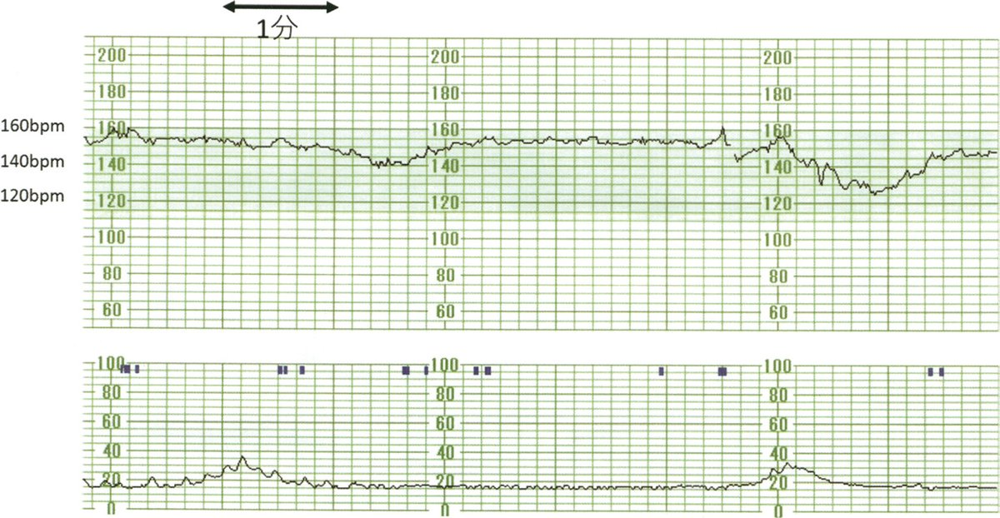
ａ 緊急帝王切開
ｂ 止血薬点滴静注
ｃ 子宮収縮薬点滴静注
ｄ 副腎皮質ステロイド筋注
ｅ 硫酸マグネシウム点滴静注
✅
ａ 緊急帝王切開
妊娠高血圧症候群を背景とする常位胎盤早期剝離であり、直ちに緊急帝王切開を行う。
📸 胎児心拍数陣痛図の読み方
実際の記録は参照できないが、常位胎盤早期剝離では子宮収縮曲線の基線が持続的に上昇（子宮の板状硬）し、胎児心拍数は基線細変動の減少・遅発一過性徐脈・遷延徐脈を呈する。すなわち胎児機能不全である。🚨 本例の所見と診断
・腹痛＋腹部が硬い（板状硬）・血圧162/108mmHg → 妊娠高血圧症候群（重症域）。早剝の最大の危険因子
・脈拍110/分 → 疼痛・出血によるショックの前兆
・胎盤の厚さ7cm → 胎盤後血腫による肥厚（正常は2〜3cm）
・腟内の凝血塊 → 性器出血
常位胎盤早期剝離と診断し、直ちに緊急帝王切開（＋DICの評価と補充療法）。
子宮口6cm開大とすでに分娩が進行しているが、胎児機能不全があり経腟分娩を待つ余裕はない。
□ 選択肢の検討
| 選択肢 | 評価 |
|---|---|
| ａ 緊急帝王切開 | 正しい。母児救命のため一刻を争う |
| ｂ 止血薬点滴静注 | 無意味。剝離面からの出血は止血薬では止まらない。原因（妊娠の終了）を除かなければならない |
| ｃ 子宮収縮薬点滴静注 | 禁忌。剝離を助長し胎児をさらに危険にさらす |
| ｄ 副腎皮質ステロイド筋注 | 不適切。妊娠36週4日で肺成熟はほぼ完成しており、効果発現を待つ時間もない |
| ｅ 硫酸マグネシウム点滴静注 | 子癇の予防・治療には用いるが、早剝の治療にはならない。本例は子癇発作を起こしておらず、まず児を娩出させる |
🎯 国試ポイント
常位胎盤早期剝離の3徴：持続する腹痛・子宮の板状硬・性器出血（外出血は少ない）。進行するとCouvelaire子宮（子宮筋層内への出血で子宮が暗紫色になる）と産科DICをきたす。早剝を疑ったら診断確定を待たずに手術室へ運ぶ。
Q.202(116A-65)📷 画像2択67%
35 歳の経産婦（3 妊2 産）。妊娠34 週2 日、妊婦健康診査のため受診した。妊娠初期から妊婦健康診査を受けていた。30 歳時および32 歳時に、それぞれ骨盤位および既往帝王切開の適応で選択的帝王切開の既往がある。身長157cm、体重55kg（非妊時46kg）。体温36.8℃。脈拍80/ 分、整。血圧110/74mmHg。1 日に数回の子宮収縮を自覚している。胎児心拍数陣痛図で異常を認めない。1 週間前に施行した骨盤MRI のT2 強調矢状断像を示す。
説明として適切なのはどれか。2 つ選べ。
説明として適切なのはどれか。2 つ選べ。
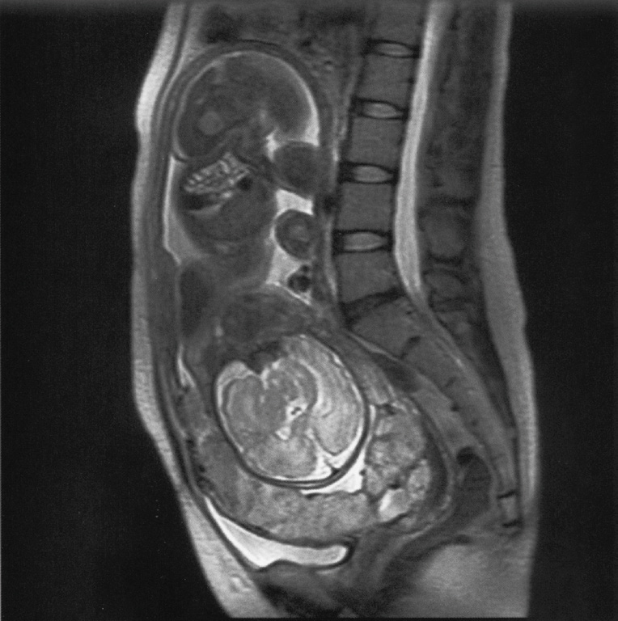
ａ 「胎盤の後面に血腫をみとめます」
ｂ 「胎盤が内子宮口を覆っています」
ｃ 「臍帯血管が内子宮口上を走行しています」
ｄ 「胎盤の一部が子宮壁から剝がれています」
ｅ 「胎盤が子宮筋層を貫いている可能性があります」
✅
ｂ 「胎盤が内子宮口を覆っています」
ｅ 「胎盤が子宮筋層を貫いている可能性があります」
MRIで胎盤が内子宮口を覆い（前置胎盤）、子宮筋層を貫通する所見があり穿通胎盤が疑われる。
📸 骨盤MRI T2強調矢状断像の読み方
実際の画像は参照できないが、帝王切開2回の既往という背景から次を読む。前置胎盤：胎盤が内子宮口を覆っている
癒着胎盤（特に穿通胎盤 placenta percreta）を示唆する所見：
・子宮筋層と胎盤の間の低信号線（子宮胎盤境界）の消失
・胎盤内のT2低信号帯〈dark intraplacental band〉
・子宮筋層の菲薄化・断裂、胎盤の子宮輪郭外への膨隆（bulging）
・膀胱壁との境界不明瞭・膀胱内への突出
・胎盤内の異常血管増生
🩸 帝王切開既往＋前置胎盤＝癒着胎盤
癒着胎盤は脱落膜（Nitabuch層）の欠損により絨毛が子宮筋層に直接侵入する病態。・accreta（癒着胎盤）：筋層表面に接着
・increta（嵌入胎盤）：筋層内へ侵入
・percreta（穿通胎盤）：筋層を貫通し漿膜・膀胱に達する
帝王切開の既往部位（子宮下節）は脱落膜が乏しく、そこに前置胎盤が付着すると癒着胎盤になりやすい。帝切1回で約3%、2回で約10%、3回以上で40%超。
分娩時に胎盤が剝がれず制御不能の大量出血をきたすため、術前に診断して自己血貯血・大量輸血の準備・動脈バルーン留置・子宮全摘の同意取得・高次施設での計画的帝王切開を行う。
□ 選択肢の検討
| 選択肢 | 評価 |
|---|---|
| ａ 「胎盤の後面に血腫をみとめます」 | 誤り。胎盤後血腫は常位胎盤早期剝離の所見。本例は無症状でCTG正常であり早剝は否定的 |
| ｂ 「胎盤が内子宮口を覆っています」 | 正しい。前置胎盤 |
| ｃ 「臍帯血管が内子宮口上を走行しています」 | 誤り。それは前置血管。MRIではなく経腟カラードプラで診断する |
| ｄ 「胎盤の一部が子宮壁から剝がれています」 | 誤り。常位胎盤早期剝離の所見。無症状・CTG正常で否定的 |
| ｅ 「胎盤が子宮筋層を貫いている可能性があります」 | 正しい。穿通胎盤〈placenta percreta〉 |
🎯 国試ポイント
本問（116A-65）とQ189（119D-74）、Q207（113A-71）は「帝王切開2回の既往＋MRI」で前置胎盤＋癒着胎盤を答えさせる、ほぼ同一の設問である。繰り返し出題される最重要パターン。Q.203(115F-5)33%
胎児心拍数陣痛図の遅発一過性徐脈の原因となるのはどれか。
ａ 過強陣痛
ｂ 臍帯圧迫
ｃ 児頭圧迫
ｄ 胎児貧血
ｅ 母体発熱
✅
ａ 過強陣痛
遅発一過性徐脈は子宮胎盤循環不全によって生じ、過強陣痛はその代表的な原因である。
💓 遅発一過性徐脈〈late deceleration〉
波形：子宮収縮の開始より遅れて徐脈が始まり、収縮が終わってから緩やかに回復する（収縮のピークと徐脈の最下点がずれる）。機序：子宮胎盤循環不全
子宮が収縮すると、子宮筋層を貫くらせん動脈が圧迫されて絨毛間腔への血流が減少する。胎盤の予備能が十分なら胎児は影響を受けないが、予備能が低下していると収縮のたびに胎児が低酸素に陥り、化学受容器反射で徐脈を生じる。この反応に時間がかかるため徐脈が「遅れて」現れる。
原因
・過強陣痛（収縮が強く長く頻回で、絨毛間腔の血流回復が間に合わない）
・常位胎盤早期剝離（胎盤の有効面積が減少）
・妊娠高血圧症候群・胎盤機能不全・FGR（もともと予備能が低い）
・母体低血圧（仰臥位低血圧症候群・脊髄くも膜下麻酔）
・母体の低酸素・重症貧血
□ 一過性徐脈の鑑別
| 所見 | 波形の特徴 | 原因 | 意義・対応 |
|---|---|---|---|
| 早発一過性徐脈 | 子宮収縮と同時に始まり、同時に最下点、同時に回復（鏡像） | 児頭圧迫 → 迷走神経反射 | 生理的。処置不要 |
| 変動一過性徐脈 | 急激に下降し急激に回復。子宮収縮との時間関係が一定しない | 臍帯圧迫 | 軽度なら経過観察。高度・反復なら体位変換・羊水注入 |
| 遅発一過性徐脈 | 子宮収縮より遅れて始まり、収縮終了後に回復 | 子宮胎盤循環不全（早剝・過強陣痛・妊娠高血圧症候群・胎盤機能不全） | 危険。体位変換・酸素・子宮収縮薬中止・急速遂娩 |
| 遷延一過性徐脈 | 2分以上10分未満持続する徐脈 | 臍帯脱出・過強陣痛・母体低血圧（仰臥位低血圧症候群・脊麻） | 危険。原因除去・急速遂娩 |
| サイナソイダルパターン | 規則的な正弦波様（振幅5〜15bpm、周期2〜5回/分）。細変動は消失 | 高度胎児貧血（血液型不適合・パルボB19・胎児母体間輸血） | 極めて危険 |
□ 選択肢の検討
| 選択肢 | 評価 |
|---|---|
| ａ 過強陣痛 | 正しい。子宮胎盤循環不全 → 遅発一過性徐脈 |
| ｂ 臍帯圧迫 | 変動一過性徐脈の原因 |
| ｃ 児頭圧迫 | 早発一過性徐脈の原因（迷走神経反射。生理的） |
| ｄ 胎児貧血 | サイナソイダルパターンを呈する |
| ｅ 母体発熱 | 胎児頻脈の原因（絨毛膜羊膜炎を示唆） |
💡 覚え方
「早発は頭（児頭圧迫）、変動は臍（臍帯圧迫）、遅発は胎盤（子宮胎盤循環不全）」。正答率33%と低いのは、過強陣痛が「子宮胎盤循環不全を起こす」という因果がすぐに結びつかないため。陣痛＝子宮収縮＝らせん動脈の圧迫＝胎盤血流の途絶と考えれば納得できる。
したがって遅発一過性徐脈をみたらまず子宮収縮薬（オキシトシン）を中止する（Q230）。
Q.204(114C-29)2択93%
妊娠37 週の胎児および胎児付属物と正常な所見の組合せで正しいのはどれか。2 つ選べ。
ａ 胎児心拍数 ― ――――――――――――― 90/ 分
ｂ 推定胎児体重 ― ―――――――――――― 1,900g
ｃ 羊水指数〈AFI〉 ―――――――――――― 12cm
ｄ ノンストレステスト〈NST〉 ――――――― reactive
ｅ Biophysical profile score〈BPS〉 ――――― 4 点
✅
ｃ 羊水指数〈AFI〉 ―――――――――――― 12cm
ｄ ノンストレステスト〈NST〉 ――――――― reactive
羊水指数12cmは正常範囲（5〜25cm）であり、NSTがreactiveであれば胎児well-beingは良好である。
📏 妊娠37週の正常値
・胎児心拍数基線：110〜160bpm（90/分は徐脈で異常）・推定胎児体重：妊娠37週で約2,700g（1,900gは−2.0SD以下でFGR）
・羊水指数〈AFI〉：5〜25cm（5未満で羊水過少、25超で羊水過多）
・羊水ポケット〈MVP〉：2〜8cm
・NST：reactive（20分間に15bpm以上・15秒以上の一過性頻脈が2回以上）
・BPS：8〜10点で良好（4点以下は胎児機能不全）
□ 選択肢の検討
| 選択肢 | 評価 |
|---|---|
| ａ 胎児心拍数 90/分 | 異常。徐脈（正常は110〜160bpm） |
| ｂ 推定胎児体重 1,900g | 異常。妊娠37週の基準は約2,700g。胎児発育不全〈FGR〉 |
| ｃ 羊水指数〈AFI〉 12cm | 正常（基準5〜25cm） |
| ｄ NST reactive | 正常。胎児well-being良好のサイン |
| ｅ BPS 4点 | 異常。4点以下は胎児機能不全で分娩を考慮 |
💡 覚え方
妊娠週数と推定体重：22週500g・28週1,000g・32週1,800g・36週2,500g・40週3,000g。羊水量：AFI 5〜25cm、MVP 2〜8cm。
BPS：8〜10点は良好、6点は再検、4点以下は分娩。
Q.205(114C-30)📷 画像2択88%
妊娠37 週0 日の妊婦に行った胎児心拍数陣痛図を示す。
認められる所見はどれか。2 つ選べ。
認められる所見はどれか。2 つ選べ。
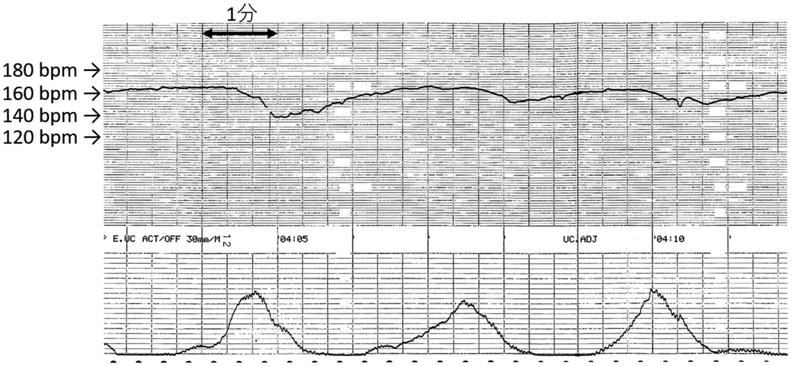
ａ 徐 脈
ｂ 基線細変動消失
ｃ 早発一過性徐脈
ｄ 遅発一過性徐脈
ｅ 変動一過性徐脈
✅
ｂ 基線細変動消失
ｄ 遅発一過性徐脈
基線細変動が消失し、子宮収縮に遅れて始まる遅発一過性徐脈を反復している。
📸 胎児心拍数陣痛図の読み方（判読の手順）
実際の記録は参照できないが、CTGは必ず次の順で読む。① 心拍数基線：110〜160bpmか（徐脈・頻脈の有無）
② 基線細変動：6〜25bpmの揺らぎがあるか
→ 本問では細変動が消失（平坦な基線）
③ 一過性頻脈の有無
④ 一過性徐脈の有無と種類（子宮収縮曲線との時間関係で判定）
→ 子宮収縮の開始より遅れて徐脈が始まり、収縮終了後に回復＝遅発一過性徐脈
基線細変動消失＋反復する遅発一過性徐脈は胎児のアシドーシスが進行した最も危険な組合せ（レベル5相当）であり、直ちに急速遂娩を要する。
□ 一過性徐脈の鑑別
| 所見 | 波形の特徴 | 原因 | 意義・対応 |
|---|---|---|---|
| 早発一過性徐脈 | 子宮収縮と同時に始まり、同時に最下点、同時に回復（鏡像） | 児頭圧迫 → 迷走神経反射 | 生理的。処置不要 |
| 変動一過性徐脈 | 急激に下降し急激に回復。子宮収縮との時間関係が一定しない | 臍帯圧迫 | 軽度なら経過観察。高度・反復なら体位変換・羊水注入 |
| 遅発一過性徐脈 | 子宮収縮より遅れて始まり、収縮終了後に回復 | 子宮胎盤循環不全（早剝・過強陣痛・妊娠高血圧症候群・胎盤機能不全） | 危険。体位変換・酸素・子宮収縮薬中止・急速遂娩 |
| 遷延一過性徐脈 | 2分以上10分未満持続する徐脈 | 臍帯脱出・過強陣痛・母体低血圧（仰臥位低血圧症候群・脊麻） | 危険。原因除去・急速遂娩 |
| サイナソイダルパターン | 規則的な正弦波様（振幅5〜15bpm、周期2〜5回/分）。細変動は消失 | 高度胎児貧血（血液型不適合・パルボB19・胎児母体間輸血） | 極めて危険 |
□ 選択肢の検討
| 選択肢 | 評価 |
|---|---|
| ａ 徐脈 | 心拍数基線が110bpm未満の状態。本問の基線は正常範囲 |
| ｂ 基線細変動消失 | 認められる。中枢神経の低酸素・アシドーシスを示す最も危険な所見 |
| ｃ 早発一過性徐脈 | 子宮収縮と同時に始まり同時に回復する。本問は遅れて始まる |
| ｄ 遅発一過性徐脈 | 認められる。子宮胎盤循環不全 |
| ｅ 変動一過性徐脈 | 急激に下降・回復し、収縮との時間関係が一定しない。本問は該当しない |
Q.206(114E-28)98%
38 歳の初妊婦（1 妊0 産）。妊娠34 週に激しい腹痛と性器出血のため救急車で搬入された。これまでの妊娠経過は順調であったが、妊娠33 週の妊婦健康診査で両下腿の浮腫と尿蛋白、軽度の血圧上昇を指摘されていた。喫煙は、妊娠前は20 本/ 日であったが、妊娠後は5 本/ 日に減らしている。体温36.9℃。心拍数72/ 分、整。血圧170/90mmHg。腹痛のため表情は苦悶様で、腹部は膨隆しており板状に硬く、圧痛を認める。腟鏡診で少量の性器出血を認め、内診で子宮口は閉鎖している。尿蛋白2 ＋。超音波検査で子宮底部に存在する胎盤の著明な肥厚を認める。胎児心拍数陣痛図で基線細変動の減少と遅発一過性徐脈を認める。
最も考えられるのはどれか。
最も考えられるのはどれか。
ａ 切迫早産
ｂ 切迫流産
ｃ 前置胎盤
ｄ 絨毛膜羊膜炎
ｅ 常位胎盤早期剝離
✅
ｅ 常位胎盤早期剝離
妊娠高血圧腎症と喫煙を背景に、持続する腹痛・板状硬の子宮・胎盤肥厚・胎児機能不全を呈する常位胎盤早期剝離である。
🚨 常位胎盤早期剝離の典型像
本例は教科書的な所見がすべて揃っている。| 所見 | 意義 |
|---|---|
| 激しい（持続する）腹痛・苦悶様表情 | 間欠のない疼痛。陣痛と異なる |
| 腹部が板状に硬く圧痛あり | 子宮の板状硬（子宮筋層内への出血） |
| 少量の性器出血 | 外出血は少ない（血液は胎盤後血腫として子宮内に留まる） |
| 胎盤の著明な肥厚 | 胎盤後血腫（正常な胎盤厚は2〜3cm） |
| 基線細変動の減少＋遅発一過性徐脈 | 胎児機能不全（子宮胎盤循環不全） |
| 血圧170/90mmHg・尿蛋白2＋ | 妊娠高血圧腎症＝早剝の最大の危険因子 |
| 喫煙 5本/日 | 早剝の危険因子（ニコチンによる血管収縮） |
直ちに緊急帝王切開＋DICの評価と補充療法。
□ 選択肢の検討
| 選択肢 | 評価 |
|---|---|
| ａ 切迫早産 | 否定的。規則的な子宮収縮と頸管熟化が主体で、板状硬・胎盤肥厚・胎児機能不全は説明できない |
| ｂ 切迫流産 | 週数が違う。流産は妊娠22週未満 |
| ｃ 前置胎盤 | 否定的。前置胎盤は無痛性で、胎盤は子宮底部（内子宮口から離れている）。出血も無痛性・反復性 |
| ｄ 絨毛膜羊膜炎 | 否定的。発熱（36.9℃）・母体頻脈（72/分）がない |
| ｅ 常位胎盤早期剝離 | 正しい |
□ 妊娠後期の性器出血の鑑別
| 疾患 | 疼痛・出血 | 子宮 | 胎児 | 特徴・対応 |
|---|---|---|---|---|
| 前置胎盤 | 無痛性の反復する性器出血（警告出血） | 軟らかい | 通常は良好（母体出血が主） | 内診（指診）は禁忌。経腟超音波で診断。帝王切開 |
| 常位胎盤早期剝離 | 持続する強い腹痛＋性器出血（外出血は少ない） | 板状硬・圧痛 | 胎児機能不全・胎児死亡 | 超音波で胎盤肥厚（胎盤後血腫）。DIC。直ちに帝王切開 |
| 前置血管 | 破水直後の無痛性出血 | 軟らかい | 急激な徐脈・失血死 | 出血は胎児血。経腟カラードプラで診断。予防的帝王切開 |
| 子宮破裂 | 突然の激痛（引き裂かれるような） | 胎児部分を腹壁直下に触れる | 胎児徐脈・死亡 | 帝王切開既往が最大の危険因子。緊急開腹 |
🎯 国試ポイント
「胎盤は子宮底部にある（＝前置胎盤ではない）のに出血している」という記述は、正常位置に付着した胎盤が剝離した＝常位胎盤早期剝離を示す重要なヒント。妊娠高血圧腎症の妊婦に突然の腹痛と出血があれば、まず早剝を疑って手術室へ。
Q.207(113A-71)📷 画像2択79%
35 歳の経産婦（3 妊2 産）。妊娠33 週に周産期管理目的で、自宅近くの産科診療所から紹介され受診した。既往歴は、30 歳時および32 歳時に、それぞれ骨盤位および既往帝王切開の適応で選択的帝王切開。身長156cm、体重56kg（妊娠前体重48kg）。体温36.8℃。脈拍84/ 分、整。血圧108/76mmHg。現時点で自覚症状はなく、胎児心拍数陣痛図で異常を認めない。骨盤MRI のT2 強調像を示す。
考えられるのはどれか。2 つ選べ。
考えられるのはどれか。2 つ選べ。
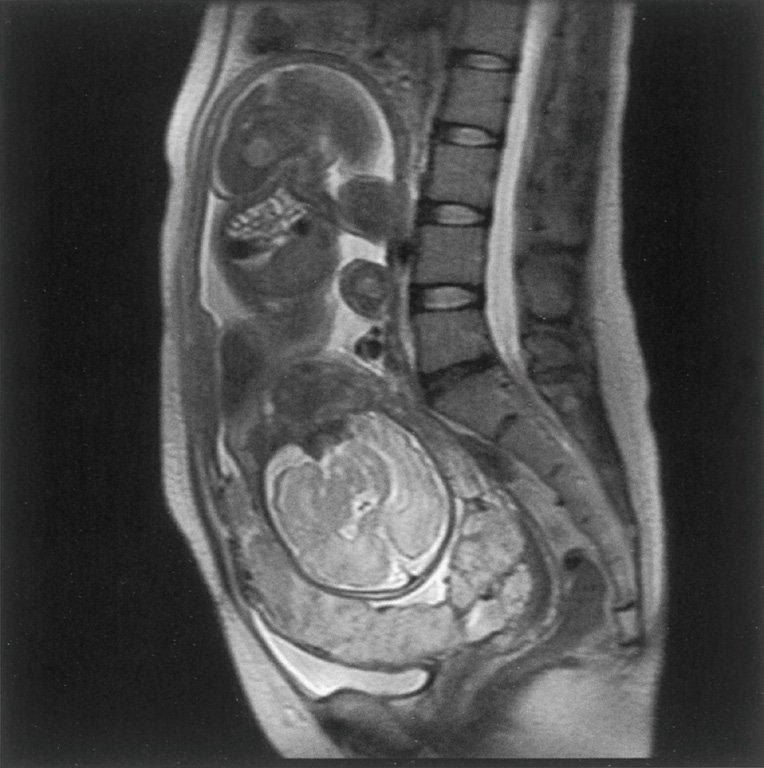
ａ 前置血管
ｂ 前置胎盤
ｃ 癒着胎盤
ｄ 胎盤後血腫
ｅ 常位胎盤早期剝離
✅
ｂ 前置胎盤
ｃ 癒着胎盤
帝王切開2回の既往があり、MRIで胎盤が内子宮口を覆い筋層へ侵入する前置胎盤・癒着胎盤である。
📸 骨盤MRI T2強調像の読み方
前置胎盤：胎盤が内子宮口を覆っている癒着胎盤を示唆する所見：
・子宮筋層と胎盤の間の低信号線（子宮胎盤境界）の消失
・胎盤内のT2低信号帯〈dark intraplacental band〉
・子宮筋層の菲薄化・胎盤の子宮外への膨隆
・胎盤内の異常血管増生
🩸 なぜ癒着胎盤を疑うか
癒着胎盤は脱落膜（Nitabuch層）が欠損した部位に胎盤が付着することで生じる。帝王切開の既往部位（子宮下節の瘢痕）は脱落膜が乏しい。そこに前置胎盤が付着すると、絨毛が直接筋層へ侵入して癒着胎盤となる。
帝切1回で約3%、2回で約10%、3回以上で40%超。
本例は帝王切開2回の既往＋今回前置胎盤であり、癒着胎盤のハイリスク。現時点で無症状・CTG正常だが、分娩時の制御不能な大量出血に備えて高次施設での計画的帝王切開を準備する。
□ 選択肢の検討
| 選択肢 | 評価 |
|---|---|
| ａ 前置血管 | 臍帯血管が卵膜上を走行し内子宮口を横切る。経腟カラードプラで診断。MRIの所見ではない |
| ｂ 前置胎盤 | 正しい |
| ｃ 癒着胎盤 | 正しい。帝切2回＋前置胎盤 |
| ｄ 胎盤後血腫 | 否定的。常位胎盤早期剝離の所見。無症状でCTG正常 |
| ｅ 常位胎盤早期剝離 | 否定的。腹痛・子宮硬直・胎児機能不全がない |
Q.208(113D-64)📷 画像2択42%
34 歳の初妊婦（1 妊0 産）。妊娠32 週0 日。下腹部痛と性器出血を主訴に来院した。数日前から軽度の下腹部痛があり様子をみていたが、本日朝に少量の性器出血があったため受診した。妊娠30 週5 日に行われた前回の妊婦健康診査までは、特に異常を指摘されていなかった。来院時の腟鏡診で淡血性の帯下を少量認めた。内診で子宮口は閉鎖していた。腹部超音波検査では胎児は頭位で形態異常はなく、推定体重は1,850g、胎盤は子宮底部に付着し、羊水指数〈AFI〉は18.0cm であった。胎児心拍数陣痛図（A）及び経腟超音波像（B）を示す。
まず行うべき処置として適切なのはどれか。2 つ選べ。
まず行うべき処置として適切なのはどれか。2 つ選べ。
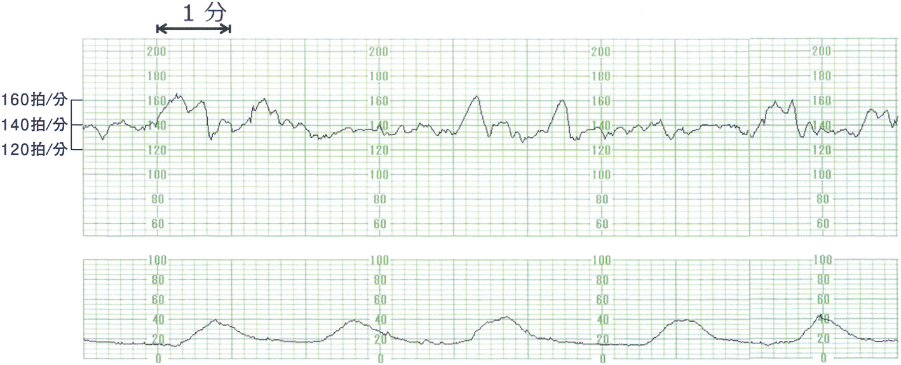
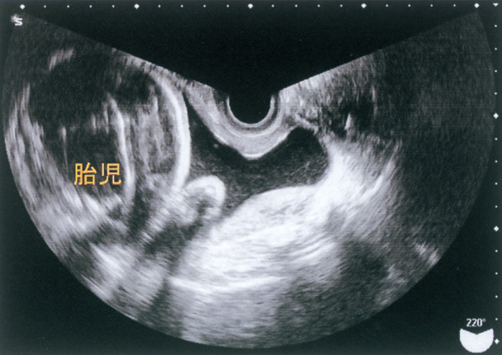
ａ 抗菌薬投与
ｂ NSAIDs 投与
ｃ β2 刺激薬投与
ｄ 子宮頸管縫縮術
ｅ 副腎皮質ステロイド投与
✅
ｃ β2 刺激薬投与
ｅ 副腎皮質ステロイド投与
妊娠32週の切迫早産であり、β₂刺激薬で子宮収縮を抑制しつつ副腎皮質ステロイドで胎児肺成熟を促す。
📸 画像の読み方
（A）胎児心拍数陣痛図：規則的な子宮収縮を認めるが、胎児心拍数波形は正常（基線・細変動・一過性頻脈あり、一過性徐脈なし）（B）経腟超音波像：頸管長の短縮（25mm未満）と内子宮口のfunneling
下腹部痛（子宮収縮）＋淡血性帯下（産徴）＋頸管短縮 → 切迫早産。
胎盤は子宮底部（前置胎盤ではない）、子宮に圧痛の記載なし、AFI 18.0cmは正常範囲であり、常位胎盤早期剝離・前置胎盤・羊水異常はいずれも否定的。
💊 妊娠34週未満の切迫早産の治療
① 子宮収縮抑制薬（β₂刺激薬＝塩酸リトドリン）の点滴静注β₂受容体刺激 → 細胞内cAMP↑ → 子宮平滑筋を弛緩させる
副作用：母体の頻脈・動悸・手指振戦・低K血症・肺水腫・高血糖、胎児頻脈
② 副腎皮質ステロイド（ベタメタゾン）の母体筋注
妊娠22〜34週で1週間以内の早産が予測される場合に胎児肺サーファクタント産生を促進
新生児呼吸窮迫症候群〈RDS〉・脳室内出血・壊死性腸炎・新生児死亡を有意に減少させる
24時間ごとに2回筋注、効果は投与開始24〜48時間後に最大
子宮収縮抑制薬はステロイドの効果が出るまでの時間を稼ぐという意味でも重要。
□ 選択肢の検討
| 選択肢 | 評価 |
|---|---|
| ａ 抗菌薬投与 | 絨毛膜羊膜炎を疑う所見（発熱・子宮圧痛・白血球増多・CRP上昇）の記載がない |
| ｂ NSAIDs 投与 | 禁忌。子宮収縮抑制作用はあるが胎児動脈管の収縮・羊水過少を招く。妊娠後期は用いない |
| ｃ β2 刺激薬投与 | 正しい。塩酸リトドリンによる子宮収縮抑制 |
| ｄ 子宮頸管縫縮術 | 不適切。すでに子宮収縮・産徴があり、感染・破水を招く。予防的縫縮は妊娠12〜16週 |
| ｅ 副腎皮質ステロイド投与 | 正しい。妊娠32週で胎児肺成熟を促進 |
🎯 国試ポイント
正答率42%と低い。「まず行うべき処置」を子宮収縮抑制薬（時間を稼ぐ）＋副腎皮質ステロイド（児を守る）の2本立てで考えるのが切迫早産の定石（Q194・Q171も同じ論理）。Q.209(113F-60)📷 画像93%
妊娠34 週1 日の初妊婦（1 妊0 産）。胎動減少を主訴に来院した。2 日前の妊婦健診では特に異常は指摘されなかったが、昨日から胎動の減少を自覚しており、心配になって受診した。下腹部痛や子宮収縮の自覚はなく、性器出血や破水感の訴えもない。脈拍72/ 分、整。血圧124/72mmHg。呼吸数18/ 分。来院後に施行した胎児心拍数陣痛図を示す。
胎児の状態を評価するためにまず測定すべきなのはどれか。
胎児の状態を評価するためにまず測定すべきなのはどれか。
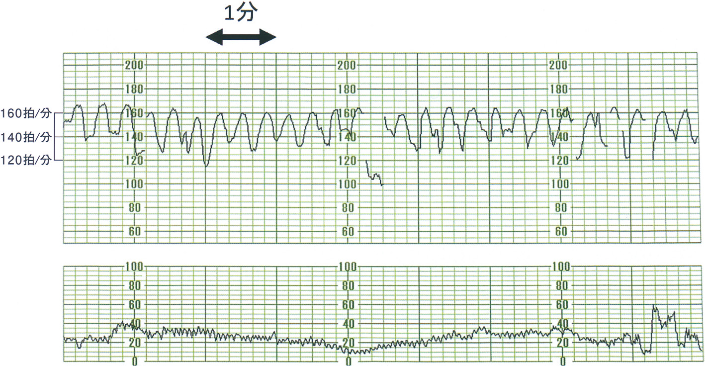
ａ 羊水指数〈AFI〉
ｂ 母体不規則抗体価
ｃ 羊水中ビリルビン濃度
ｄ 胎児中大脳動脈血流速度
ｅ 母体血中ヘモグロビンF 濃度
✅
ｄ 胎児中大脳動脈血流速度
胎児心拍数陣痛図のサイナソイダルパターンは高度胎児貧血を示すため、中大脳動脈血流速度を測定する。
📸 胎児心拍数陣痛図の読み方
実際の記録は参照できないが、胎動減少を主訴とする本例ではサイナソイダルパターン（正弦波様パターン）を認めると読む。サイナソイダルパターンの定義
・振幅5〜15bpmの規則的で滑らかな正弦波様の波形が2〜5サイクル/分
・基線細変動は消失し、一過性頻脈も認めない
・10分以上持続する
高度の胎児貧血に特徴的で、極めて危険な所見である。
🩸 胎児貧血の評価：中大脳動脈最高血流速度〈MCA-PSV〉
胎児が貧血になると① 血液粘稠度が低下して血流が速くなる
② 組織への酸素供給を保つため心拍出量が増加する
この2つにより中大脳動脈の最高血流速度が上昇（1.5 MoM以上で高度貧血）する。
非侵襲的に反復測定できるため、胎児貧血評価の第一選択。高度貧血が確認されれば臍帯穿刺で確定し胎児輸血を行う。
胎児貧血の原因
・免疫性：血液型不適合妊娠（RhD不適合）
・感染：パルボウイルスB19（赤芽球癆）
・胎児母体間輸血症候群（胎児血が母体循環へ流入。母体血中HbF＝Kleihauer-Betke試験で診断）
・双胎間輸血症候群の供血児
□ 選択肢の検討
| 選択肢 | 評価 |
|---|---|
| ａ 羊水指数〈AFI〉 | 羊水量の評価。胎児貧血の直接評価にはならない |
| ｂ 母体不規則抗体価 | 血液型不適合妊娠の原因検索としては有用だが、胎児貧血の重症度は評価できない。本例は「胎児の状態を評価する」ことを問うている |
| ｃ 羊水中ビリルビン濃度 | ΔOD450法。かつての胎児溶血の評価法だが羊水穿刺が必要で侵襲的。MCA-PSVに置き換わった |
| ｄ 胎児中大脳動脈血流速度 | 正しい。非侵襲的に胎児貧血を評価 |
| ｅ 母体血中ヘモグロビンF 濃度 | 胎児母体間輸血症候群の原因検索（Kleihauer-Betke試験）に用いる。胎児の状態そのものの評価ではない |
🎯 国試ポイント
「胎動減少＋サイナソイダルパターン」＝高度胎児貧血。胎児貧血をみたらMCA-PSV（重症度）→ 原因検索（不規則抗体・パルボIgM・Kleihauer-Betke）→ 胎児輸血の順。
Q.210(112A-53)📷 画像73%
23 歳の初産婦。妊娠38 週2 日に陣痛発来のため入院した。これまでの妊娠経過は順調であった。午後0 時に10 分間隔の規則的な腹痛を自覚して受診した。来院時の内診で子宮口は3cm 開大、児頭下降度はSP ± 0cm、卵膜を触知した。経過観察をしていたところ午後3 時に破水し、内診で子宮口は5cm 開大、児頭下降度はSP ＋2cm、2 時方向に小泉門を触知した。この時点での胎児心拍数陣痛図を示す。
現時点での対応として適切なのはどれか。
現時点での対応として適切なのはどれか。
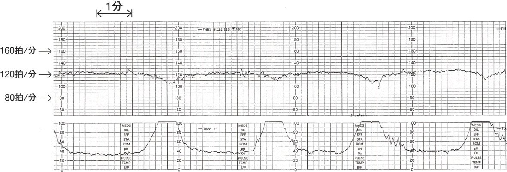
ａ 帝王切開
ｂ 吸引分娩
ｃ β2 刺激薬投与
ｄ オキシトシン投与
ｅ 胎児心拍数陣痛モニターの継続監視
✅
ｅ 胎児心拍数陣痛モニターの継続監視
破水後にみられる軽度の変動一過性徐脈は臍帯圧迫による生理的な所見で、分娩監視を継続する。
📸 胎児心拍数陣痛図の読み方
実際の記録は参照できないが、破水直後という状況から軽度の変動一過性徐脈を認めると読む。変動一過性徐脈〈variable deceleration〉
・急激に下降し急激に回復する（15秒以上、15bpm以上）
・子宮収縮との時間的関係が一定しない
・原因は臍帯圧迫（破水後は羊水のクッションが失われ臍帯が圧迫されやすい）
心拍数基線・基線細変動が正常に保たれ、軽度・散発的であれば経過観察でよい。
📊 本例の評価
・分娩の進行は正常（子宮口5cm開大、SP＋2cm、破水）・回旋も正常（2時方向に小泉門＝第2後頭位で小泉門が恥骨側）
・基線細変動が保たれていれば胎児のアシドーシスは軽度
軽度の変動一過性徐脈であれば分娩監視装置による継続監視を行い、悪化（高度・反復・基線細変動の減少）があれば体位変換・酸素投与・人工羊水注入を、それでも改善しなければ急速遂娩を検討する。
この時点で帝王切開や吸引分娩に踏み切るのは早すぎる（子宮口5cmで全開大していない）。
□ 一過性徐脈の鑑別
| 所見 | 波形の特徴 | 原因 | 意義・対応 |
|---|---|---|---|
| 早発一過性徐脈 | 子宮収縮と同時に始まり、同時に最下点、同時に回復（鏡像） | 児頭圧迫 → 迷走神経反射 | 生理的。処置不要 |
| 変動一過性徐脈 | 急激に下降し急激に回復。子宮収縮との時間関係が一定しない | 臍帯圧迫 | 軽度なら経過観察。高度・反復なら体位変換・羊水注入 |
| 遅発一過性徐脈 | 子宮収縮より遅れて始まり、収縮終了後に回復 | 子宮胎盤循環不全（早剝・過強陣痛・妊娠高血圧症候群・胎盤機能不全） | 危険。体位変換・酸素・子宮収縮薬中止・急速遂娩 |
| 遷延一過性徐脈 | 2分以上10分未満持続する徐脈 | 臍帯脱出・過強陣痛・母体低血圧（仰臥位低血圧症候群・脊麻） | 危険。原因除去・急速遂娩 |
| サイナソイダルパターン | 規則的な正弦波様（振幅5〜15bpm、周期2〜5回/分）。細変動は消失 | 高度胎児貧血（血液型不適合・パルボB19・胎児母体間輸血） | 極めて危険 |
□ 選択肢の検討
| 選択肢 | 評価 |
|---|---|
| ａ 帝王切開 | 性急。胎児機能不全と断定できる所見がない |
| ｂ 吸引分娩 | 不可。子宮口5cm開大で全開大していない。吸引分娩の要件を満たさない |
| ｃ β2 刺激薬投与 | 不適切。妊娠38週2日で陣痛発来しており、陣痛を止める理由がない |
| ｄ オキシトシン投与 | 不適切。分娩は順調に進行しており陣痛促進の適応がない。徐脈があるときに陣痛を強めるのは危険 |
| ｅ 胎児心拍数陣痛モニターの継続監視 | 正しい |
Q.211(112B-30)📷 画像複数正解66%
31 歳の1 回経産婦。妊娠32 週1 日。性器出血を主訴に妊婦健康診査を受けている周産期母子医療センターに来院した。10 日ほど前にも少量の性器出血があり、3 日間の自宅安静で軽快したという。本日自宅で夕食作りをしていたとき、突然、性器出血があり、慌てて受診した。第1 子を妊娠38 週で正常分娩している。体温36.5℃。脈拍88/ 分、整。血圧102/62mmHg。来院時、ナプキンに付着した血液は約50mL だった。腟鏡診で計250mL の血液および凝血塊の貯留を認め、子宮口から血液流出が続いているのが観察された。腹部超音波検査で胎児推定体重は1,850g、羊水量は正常。胎児心拍数陣痛図で子宮収縮はなく、胎児心拍数波形に異常を認めない。経腟超音波像を示す。
対応として正しいのはどれか。
対応として正しいのはどれか。
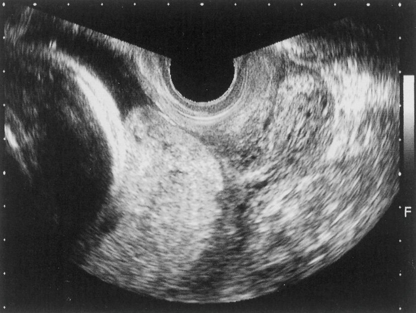
ａ 帝王切開を行う。
ｂ 子宮頸管縫縮術を行う。
ｃ 翌日の受診を指示し帰宅させる。
ｄ β2 刺激薬の点滴静注を開始する。
ｅ オキシトシンの点滴静注を開始する。
✅
ａ 帝王切開を行う。
ｄ β2 刺激薬の点滴静注を開始する。
前置胎盤の反復する警告出血であり、出血が持続すれば帝王切開、子宮収縮抑制で妊娠延長を図る立場もあり、両者が正解とされた。
⚠️ 本問について
本問は解答が「a or d」（複数の選択肢を正解とする）とされた問題である。すなわちａ「帝王切開を行う」とｄ「β₂刺激薬の点滴静注を開始する」のいずれを選んでも正解となる。📸 経腟超音波像と診断
経腟超音波像では胎盤が内子宮口を覆っている → 前置胎盤。本例の特徴：
・10日前にも出血し安静で軽快 → 反復する無痛性の警告出血（前置胎盤に典型的）
・今回は総量250mLの出血が持続
・一方でバイタルは安定（血圧102/62mmHg、脈拍88/分）
・子宮収縮なし、胎児心拍数波形は正常
・妊娠32週1日で児は未熟（推定体重1,850g）
⚖️ なぜ2つの立場が成り立つか
ａ「帝王切開を行う」を支持する根拠・出血が現在も持続している
・すでに総量250mLに達し、前回の警告出血から進行している
・前置胎盤の出血は突然大量化して母体ショック・胎児死亡に至る
・妊娠32週なら児の生存率は95%以上
ｄ「β₂刺激薬の点滴静注」を支持する根拠
・母体バイタルは安定し、胎児心拍数波形も正常
・妊娠32週と未熟であり、数日でも妊娠を延長できれば児の予後が改善する
・子宮収縮を抑えれば子宮下節の伸展による胎盤剝離が進まず、止血が期待できる
・並行して副腎皮質ステロイド投与・輸血準備を行う
実臨床では輸血を準備し帝王切開の体制を整えたうえで、子宮収縮抑制薬で止血・妊娠延長を試み、出血が増悪すれば直ちに帝王切開へ移行するという両者を並行した管理が行われる。
□ 選択肢の検討
| 選択肢 | 評価 |
|---|---|
| ａ 帝王切開を行う。 | 正解の一つ。出血が持続しており、大量出血に転じる前に児を娩出させる |
| ｂ 子宮頸管縫縮術を行う。 | 禁忌。頸管無力症の術式。胎盤を損傷して大出血を招く |
| ｃ 翌日の受診を指示し帰宅させる。 | 論外。出血が持続する前置胎盤を帰宅させれば母児ともに危険 |
| ｄ β2 刺激薬の点滴静注を開始する。 | 正解の一つ。子宮収縮を抑えて止血・妊娠延長を図る |
| ｅ オキシトシンの点滴静注を開始する。 | 禁忌。陣痛を起こせば胎盤剝離が進行して大量出血。前置胎盤に経腟分娩はありえない |
🎯 国試ポイント
前置胎盤の管理で絶対にしてはいけないこと：① 内診（指診） ② 子宮収縮薬（陣痛促進） ③ 経腟分娩 ④ 出血持続例の帰宅
この4つを外せば、残るのは「帝王切開」か「子宮収縮抑制薬」しかない。
Q.212(111I-74)📷 画像2択86%
35 歳の初産婦。妊娠33 週3 日に胎動減少と規則的な下腹部痛とを主訴に来院した。これまでの妊婦健康診査では特に異常を認めなかった。超音波検査で胎児推定体重は1,988g、羊水ポケット1cm、胎盤は子宮前壁に付着し、臍帯は胎盤辺縁に付着している。臍帯頸部巻絡を1 回認める。内診所見で子宮口は6cm 開大、未破水である。陣痛発来と診断された。このときの胎児心拍数陣痛図を示す。
正しいのはどれか。2 つ選べ。
正しいのはどれか。2 つ選べ。
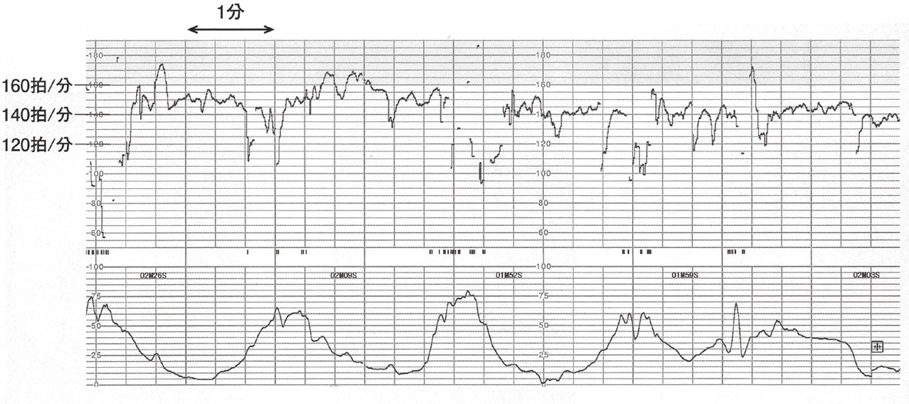
ａ 羊水過少症である。
ｂ 胎児頻脈を認める。
ｃ 胎児発育不全である。
ｄ 臍帯血流障害が疑われる。
ｅ 基線細変動は減少している。
✅
ａ 羊水過少症である。
ｄ 臍帯血流障害が疑われる。
羊水ポケット1cmは羊水過少であり、臍帯圧迫による変動一過性徐脈が生じて臍帯血流障害が疑われる。
📸 胎児心拍数陣痛図の読み方
実際の記録は参照できないが、羊水過少＋臍帯頸部巻絡という状況から変動一過性徐脈（急激に下降し急激に回復する徐脈、子宮収縮との時間関係が一定しない）を認めると読む。これは臍帯圧迫を示す所見である。心拍数基線は正常範囲（頻脈なし）、基線細変動も保たれていると読める。
💧 羊水過少と臍帯圧迫
・羊水ポケット〈MVP〉1cm（基準2〜8cm）＝羊水過少羊水は臍帯を保護するクッションであり、羊水が乏しいと子宮収縮のたびに臍帯が圧迫される
・臍帯頸部巻絡1回も臍帯圧迫を助長する
・その結果変動一過性徐脈 → 臍帯血流障害が生じる
対応は体位変換（側臥位）・酸素投与・人工羊水注入。高度・反復する徐脈や基線細変動の減少があれば急速遂娩。
□ 選択肢の検討
| 選択肢 | 評価 |
|---|---|
| ａ 羊水過少症である。 | 正しい。羊水ポケット1cm（基準2〜8cm） |
| ｂ 胎児頻脈を認める。 | 誤り。心拍数基線は正常範囲。頻脈（＞160bpm）は絨毛膜羊膜炎・母体発熱を示唆する |
| ｃ 胎児発育不全である。 | 誤り。妊娠33週3日で推定体重1,988gは妊娠33週の基準（約2,000g）に相当し正常範囲 |
| ｄ 臍帯血流障害が疑われる。 | 正しい。羊水過少＋臍帯巻絡による変動一過性徐脈 |
| ｅ 基線細変動は減少している。 | 誤り。基線細変動は保たれている（消失していれば直ちに急速遂娩を要する） |
🎯 国試ポイント
臍帯付着異常：辺縁付着（胎盤辺縁に付着）・卵膜付着（velamentous、卵膜上に付着）。卵膜付着は前置血管のリスクとなる。本例の「胎盤辺縁付着」は単独では大きな問題にならないが、羊水過少・臍帯巻絡と重なると臍帯圧迫が起こりやすい。
Q.213(110G-38)📷 画像2択90%
妊娠37 週の胎児心拍数陣痛図を示す。
認められる所見はどれか。2 つ選べ。
認められる所見はどれか。2 つ選べ。
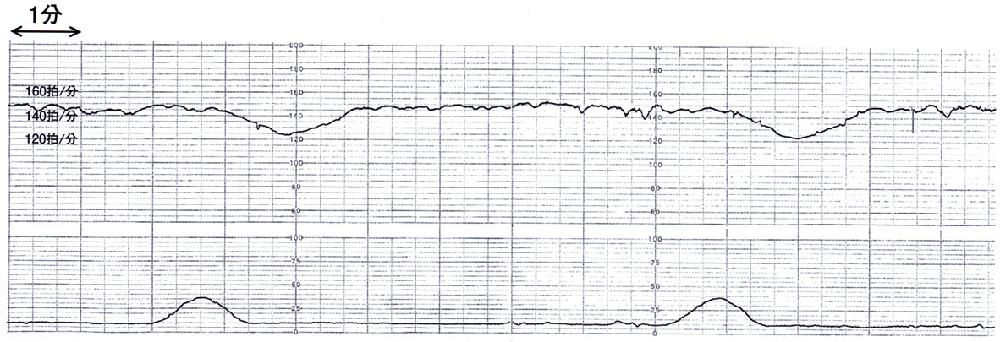
ａ 一過性頻脈
ｂ 心拍数基線正常
ｃ 変動一過性徐脈
ｄ 遅発一過性徐脈
ｅ 遷延一過性徐脈
✅
ｂ 心拍数基線正常
ｄ 遅発一過性徐脈
心拍数基線は正常範囲で、子宮収縮に遅れて始まる遅発一過性徐脈を認める。
📸 胎児心拍数陣痛図の判読手順
実際の記録は参照できないが、CTGは必ず次の順で読む。① 心拍数基線：本問は110〜160bpmの正常範囲
② 基線細変動：6〜25bpmか
③ 一過性頻脈の有無：本問では認めない
④ 一過性徐脈の種類：子宮収縮の開始より遅れて徐脈が始まり、収縮終了後に緩やかに回復＝遅発一過性徐脈
一過性徐脈の種類は必ず子宮収縮曲線（下段）との時間関係で判定する。心拍数波形だけを見ても判別できない。
□ 一過性徐脈の鑑別
| 所見 | 波形の特徴 | 原因 | 意義・対応 |
|---|---|---|---|
| 早発一過性徐脈 | 子宮収縮と同時に始まり、同時に最下点、同時に回復（鏡像） | 児頭圧迫 → 迷走神経反射 | 生理的。処置不要 |
| 変動一過性徐脈 | 急激に下降し急激に回復。子宮収縮との時間関係が一定しない | 臍帯圧迫 | 軽度なら経過観察。高度・反復なら体位変換・羊水注入 |
| 遅発一過性徐脈 | 子宮収縮より遅れて始まり、収縮終了後に回復 | 子宮胎盤循環不全（早剝・過強陣痛・妊娠高血圧症候群・胎盤機能不全） | 危険。体位変換・酸素・子宮収縮薬中止・急速遂娩 |
| 遷延一過性徐脈 | 2分以上10分未満持続する徐脈 | 臍帯脱出・過強陣痛・母体低血圧（仰臥位低血圧症候群・脊麻） | 危険。原因除去・急速遂娩 |
| サイナソイダルパターン | 規則的な正弦波様（振幅5〜15bpm、周期2〜5回/分）。細変動は消失 | 高度胎児貧血（血液型不適合・パルボB19・胎児母体間輸血） | 極めて危険 |
□ 選択肢の検討
| 選択肢 | 評価 |
|---|---|
| ａ 一過性頻脈 | 15bpm以上・15秒以上の心拍数上昇。本問では認めない |
| ｂ 心拍数基線正常 | 認められる。110〜160bpm |
| ｃ 変動一過性徐脈 | 急激に下降・回復し収縮との関係が一定しない。本問は該当しない |
| ｄ 遅発一過性徐脈 | 認められる。子宮胎盤循環不全を示す |
| ｅ 遷延一過性徐脈 | 2分以上10分未満持続する徐脈。本問は該当しない |
🎯 国試ポイント
遅発一過性徐脈をみたら①子宮収縮薬の中止 ②体位変換（左側臥位） ③酸素投与 ④輸液 ⑤原因検索（早剝・過強陣痛） ⑥改善しなければ急速遂娩。基線細変動が保たれていれば緊急性はやや低いが、細変動消失＋遅発一過性徐脈は最も危険な組合せ（Q205）。
Q.214(109A-21)75%
31 歳の初産婦。骨盤位で選択的帝王切開を受けるため妊娠38 週に入院した。手術室で静脈路確保後に側臥位で脊髄くも膜下麻酔を施行された。皮膚切開予定部位の消毒のため仰臥位となったところ、3 分後に悪心を訴えた。意識は清明。呼吸数18/ 分。脈拍96/ 分、整。血圧86/56mmHg。SpO2 98％（room air）。胎児心拍数120/ 分。
輸液速度を速めるのと同時に行うのはどれか。
輸液速度を速めるのと同時に行うのはどれか。
ａ 気管挿管
ｂ 笑気の吸入
ｃ 半坐位への体位変換
ｄ アドレナリンの静注
ｅ 患者左側方向への子宮の用手的移動
✅
ｅ 患者左側方向への子宮の用手的移動
仰臥位低血圧症候群であり、子宮を左方へ用手的に移動させて下大静脈の圧迫を解除する。
🤰 仰臥位低血圧症候群〈supine hypotensive syndrome〉
妊娠後期の妊婦を仰臥位にすると、増大した子宮が下大静脈（脊柱のやや右側を走行）を圧迫する。→ 静脈還流の減少 → 心拍出量の低下 → 血圧低下
→ 悪心・嘔吐・冷汗・顔面蒼白・意識消失、そして子宮胎盤血流の低下 → 胎児機能不全
脊髄くも膜下麻酔では交感神経が遮断されて血管が拡張しており、この機序による血圧低下がさらに増強される。
対応：子宮を左方へ移動させて下大静脈の圧迫を解除する
・用手的に子宮を左側へ押しやる（手術中はこれが確実）
・手術台を左に15〜30度傾ける、または右腰部に楔状のクッションを入れる
・並行して輸液の急速投与、必要なら昇圧薬（エフェドリン・フェニレフリン）
□ 選択肢の検討
| 選択肢 | 評価 |
|---|---|
| ａ 気管挿管 | 不要。意識清明・呼吸数18/分・SpO₂ 98%で気道と呼吸は保たれている |
| ｂ 笑気の吸入 | 不適切。麻酔深度の問題ではない |
| ｃ 半坐位への体位変換 | 逆効果。起坐させると静脈還流がさらに減り血圧が下がる。正しくは下大静脈の圧迫を解除する |
| ｄ アドレナリンの静注 | 過剰。アナフィラキシー・心停止に用いる薬。血管収縮により子宮胎盤血流をさらに減らす恐れもある |
| ｅ 患者左側方向への子宮の用手的移動 | 正しい。下大静脈圧迫の解除 |
🎯 国試ポイント
妊娠後期の妊婦は仰臥位を避け、左側臥位（またはleft uterine displacement）とするのが原則。妊婦の心肺蘇生でも子宮を左方へ移動させながら胸骨圧迫を行う（静脈還流を確保するため）。
Q.215(109B-24)📷 画像98%
検査用の試験紙を示す。
この試験紙を用いて診断するのはどれか。
この試験紙を用いて診断するのはどれか。
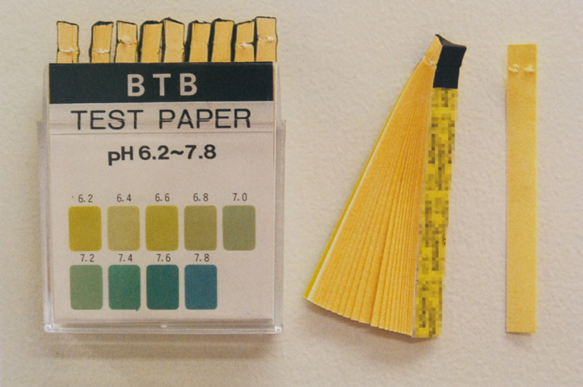
ａ 妊娠悪阻
ｂ 前期破水
ｃ 妊娠糖尿病
ｄ 羊水過多症
ｅ 妊娠高血圧症候群
✅
ｂ 前期破水
BTB試験紙は羊水の弱アルカリ性により青変することを利用して前期破水を診断する。
📸 BTB試験紙
実際の写真は参照できないが、ブロモチモールブルー〈BTB〉試験紙である。原理
・腟内は酸性（pH 3.8〜4.5）（Döderlein桿菌が乳酸を産生）→ BTBは黄色
・羊水は弱アルカリ性（pH 7.0〜8.5） → BTBが青変
したがって腟内容がアルカリ性を示せば破水（羊水の流出）と診断できる。
偽陽性に注意：血液・尿・精液・細菌性腟症の帯下・消毒薬もアルカリ性のため青変しうる。
より特異的な検査として羊歯状結晶〈ferning〉・IGFBP-1・癌胎児性フィブロネクチンがある。
□ 選択肢の検討
| 選択肢 | 評価 |
|---|---|
| ａ 妊娠悪阻 | 尿ケトン体・電解質・体重減少で評価する |
| ｂ 前期破水 | 正しい。BTB試験紙が青変 |
| ｃ 妊娠糖尿病 | 75gOGTT（空腹時92／1時間180／2時間153mg/dLの1点以上）で診断 |
| ｄ 羊水過多症 | 超音波でAFI ＞25cm、MVP ＞8cm |
| ｅ 妊娠高血圧症候群 | 血圧測定（140/90mmHg以上）と尿蛋白 |
💡 覚え方
「羊水はアルカリ（青）、腟は酸性（黄）」。なお破水の診断に用いる羊歯状結晶は、頸管粘液の羊歯状結晶（排卵期にみられる）とは別物だが、いずれも塩化ナトリウムの結晶化という同じ原理による。
Q.216(109D-21)📷 画像71%
30 歳の初産婦。妊娠38 週に陣痛発来し入院した。胎児心拍数陣痛図で異常を認め、帝王切開が行われた。娩出後の胎児付属物の写真を示す。
胎児心拍数陣痛図の所見として最も考えられるのはどれか。
胎児心拍数陣痛図の所見として最も考えられるのはどれか。
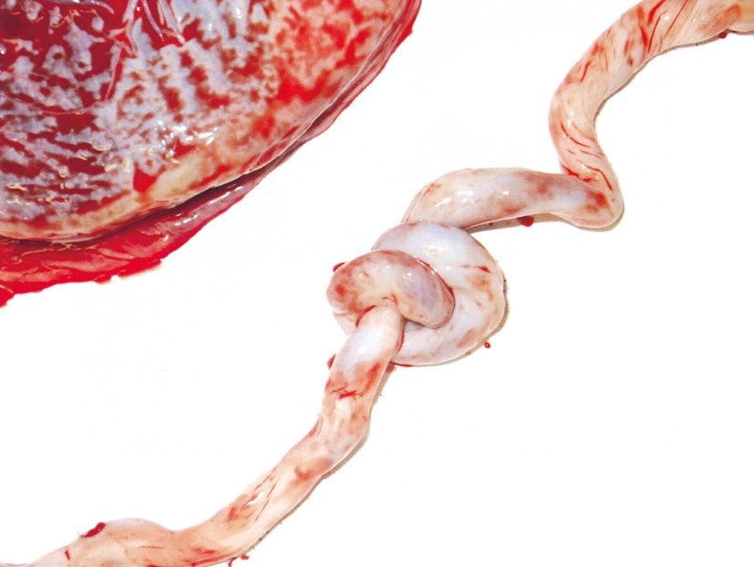
ａ 基線細変動消失
ｂ 早発一過性徐脈
ｃ 遅発一過性徐脈
ｄ 変動一過性徐脈
ｅ サイナソイダルパターン
✅
ｄ 変動一過性徐脈
胎児付属物の写真は臍帯の真結節や過度の巻絡など臍帯異常を示しており、臍帯圧迫による変動一過性徐脈が生じる。
📸 胎児付属物の写真の読み方
実際の写真は参照できないが、CTG異常で帝王切開となり、娩出後の胎児付属物を提示するという流れから臍帯の異常（真結節〈true knot〉・過捻転・過度の臍帯巻絡・臍帯の細さ）を示していると読む。臍帯異常の代表：
・臍帯真結節：臍帯が結び目を作る。締まると血流が途絶
・臍帯巻絡：頸部・体幹に巻きつく（1回巻絡は約20%と頻度が高く、多くは無害）
・臍帯過捻転・過細
・臍帯下垂・臍帯脱出（破水後、先進部との間で圧迫される）
💓 臍帯圧迫 → 変動一過性徐脈
臍帯が圧迫されると、まず壁の薄い臍帯静脈が閉塞して胎児への血液還流が減少し、さらに圧迫が強まると臍帯動脈も閉塞して胎児の血圧が急上昇する。これを圧受容器が感知して迷走神経反射により急激な徐脈（変動一過性徐脈）を生じる。
変動一過性徐脈の特徴
・急激に下降し急激に回復する（V字・W字・U字型）
・子宮収縮との時間的関係が一定しない
・軽度・散発的なら経過観察。高度・反復すれば体位変換・人工羊水注入・急速遂娩
□ 選択肢の検討
| 選択肢 | 評価 |
|---|---|
| ａ 基線細変動消失 | 中枢神経の低酸素・アシドーシス。特定の付属物所見と結びつかない |
| ｂ 早発一過性徐脈 | 児頭圧迫による生理的所見。付属物の異常とは無関係 |
| ｃ 遅発一過性徐脈 | 子宮胎盤循環不全。胎盤の所見（早剝の胎盤後血腫など）なら該当する |
| ｄ 変動一過性徐脈 | 正しい。臍帯圧迫による |
| ｅ サイナソイダルパターン | 高度胎児貧血。前置血管破裂・胎児母体間輸血などで生じる |
💡 覚え方
「早発＝頭（児頭圧迫）／変動＝臍（臍帯圧迫）／遅発＝胎盤（子宮胎盤循環不全）／サイナソイダル＝血（胎児貧血）」。娩出後に胎盤・臍帯・卵膜を観察するのは、CTG異常の原因を後づけで確認するためでもある。
Q.217(109I-41)📷 画像96%
31 歳の初産婦。妊娠33 週2 日。切迫早産と診断され妊娠28 週から入院中である。「数時間前から少しずつおなかが痛くなってきて、赤ちゃんの動きが少ない」との訴えがあり診察した。腟鏡診で分泌物は褐色少量。内診で子宮口は閉鎖している。胎児心拍数陣痛図で頻回の子宮収縮と遅発一過性徐脈を認め、胎児機能不全と診断し緊急帝王切開を行った。帝王切開時、羊水は血性で胎盤母体面に凝血塊を伴っていた。児娩出後の子宮の写真を示す。
胎児機能不全の原因として最も考えられるのはどれか。
胎児機能不全の原因として最も考えられるのはどれか。
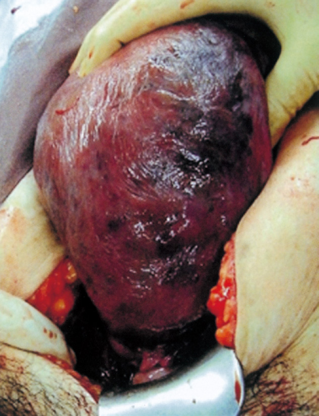
ａ 臍帯断裂
ｂ 子宮破裂
ｃ 前置胎盤
ｄ 絨毛膜羊膜炎
ｅ 常位胎盤早期剝離
✅
ｅ 常位胎盤早期剝離
血性羊水・胎盤母体面の凝血塊・子宮筋層への出血（Couvelaire子宮）から常位胎盤早期剝離である。
📸 児娩出後の子宮の写真（Couvelaire子宮）
実際の写真は参照できないが、Couvelaire子宮（子宮胎盤卒中）と読む。常位胎盤早期剝離では、剝離面からの出血が子宮筋層内へ浸潤し、子宮漿膜面が暗紫色〜まだら状に変色する。子宮筋の収縮力が損なわれるため弛緩出血を合併しやすい。
術中所見の「羊水は血性」「胎盤母体面に凝血塊（胎盤後血腫）」も常位胎盤早期剝離の確定所見である。
🚨 本例の経過
・切迫早産で入院中の妊娠33週2日・数時間前から少しずつ強まる腹痛（持続する痛み）
・胎動減少
・褐色少量の分泌物（外出血は少ない＝血液は子宮内に貯留）
・CTGで頻回の子宮収縮と遅発一過性徐脈 → 子宮胎盤循環不全
これらは常位胎盤早期剝離の典型像である。切迫早産で入院管理中でも早剝は起こりうる（むしろ切迫早産・絨毛膜羊膜炎は早剝の危険因子）。
□ 選択肢の検討
| 選択肢 | 評価 |
|---|---|
| ａ 臍帯断裂 | 稀。分娩時の牽引・臍帯過短で起こるが、術中所見（血性羊水・胎盤後血腫・Couvelaire子宮）を説明できない |
| ｂ 子宮破裂 | 否定的。帝王切開既往のない初産婦。子宮が破裂していれば術中に明らかで、胎児部分が腹腔内に出る |
| ｃ 前置胎盤 | 否定的。前置胎盤は無痛性で、胎盤は内子宮口を覆う。胎児機能不全も通常きたさない |
| ｄ 絨毛膜羊膜炎 | 否定的。発熱・母体頻脈の記載がなく、血性羊水・胎盤後血腫は説明できない |
| ｅ 常位胎盤早期剝離 | 正しい |
🎯 国試ポイント
Couvelaire子宮では子宮収縮不全から弛緩出血・産科DICを合併しやすい。子宮収縮薬・双手圧迫・子宮圧迫縫合で止血を試み、制御できなければ子宮全摘を行う。早剝は切迫早産・絨毛膜羊膜炎・前期破水の管理中にも発症しうる（本例）。
Q.218(107G-43)90%
30 歳の初産婦。妊娠40 週5 日。10 分周期の下腹部緊満を主訴に来院した。これまでの妊娠経過に異常を認めなかった。脈拍72/ 分、整。血圧124/64mmHg。内診で先進部は小泉門で母体の右後方に触れる。子宮口4cm 開大、展退度80％、児頭下降度SP ＋1cm。子宮口の位置は中央、硬さは軟である。未破水である。尿所見：蛋白（－）、糖（－）。ドプラ聴診器による胎児心拍数は150/ 分である。
次に行うのはどれか。
次に行うのはどれか。
ａ 導 尿
ｂ 外陰消毒
ｃ 心電図検査
ｄ 分娩監視装置装着
ｅ パルスオキシメーター装着
✅
ｄ 分娩監視装置装着
陣痛発来し分娩が進行しているため、分娩監視装置を装着して胎児心拍数と子宮収縮を持続的に監視する。
🏥 分娩入院時の対応
本例は妊娠40週5日（正期産）で、10分周期の子宮収縮＋子宮口4cm開大・展退度80%・頸管軟化があり、陣痛発来（分娩第1期）と診断される。分娩が始まった以上、次に行うのは分娩監視装置（胎児心拍数陣痛図）の装着である。ドプラ聴診器による間欠的な聴診では一過性徐脈の種類（早発・変動・遅発）や基線細変動を評価できない。
分娩中の胎児評価は胎児心拍数と子宮収縮を同時に、連続して記録することが不可欠であり、これにより胎児機能不全を早期に検出できる。
📊 内診所見の読み方（Bishopスコア）
Bishopスコアは頸管の熟化度を評価する（13点満点、9点以上で熟化）。① 子宮口開大度（本例4cm） ② 展退度（本例80%） ③ 児頭下降度（本例SP＋1cm）
④ 頸管の硬度（本例：軟） ⑤ 子宮口の位置（本例：中央）
また先進部は小泉門で母体の右後方＝第2後頭位で、回旋は正常。
（小泉門は三角形で矢状縫合とλ縫合が合流する点。これを触れれば児頭は屈位＝正常）
□ 選択肢の検討
| 選択肢 | 評価 |
|---|---|
| ａ 導尿 | 分娩の進行を妨げる膀胱充満があれば行うが、「次に行う」処置ではない |
| ｂ 外陰消毒 | 分娩直前（分娩第2期）に行う |
| ｃ 心電図検査 | 母体に心疾患を疑う所見がない |
| ｄ 分娩監視装置装着 | 正しい。胎児心拍数と子宮収縮の連続監視 |
| ｅ パルスオキシメーター装着 | 母体の酸素化の評価。胎児の状態は評価できない |
Q.219(107G-52)📷 画像96%
31 歳の2 回経妊1 回経産婦。妊娠39 週2 日。陣痛発来のため入院した。分娩は順調に進行し、入院3 時間後に子宮口8cm 開大、未破水である。規則的な陣痛を認めており、胎児心拍数パターンに異常を認めない。胎児心拍数陣痛図（①～⑤）を示す。
このときの胎児心拍数陣痛図として考えられるのはどれか。
このときの胎児心拍数陣痛図として考えられるのはどれか。
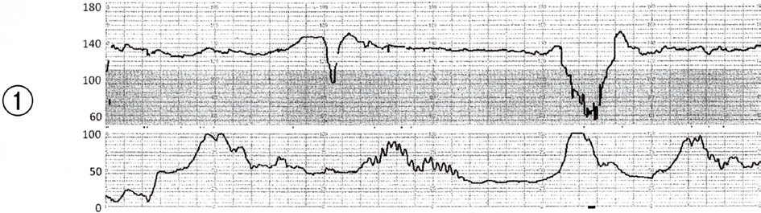

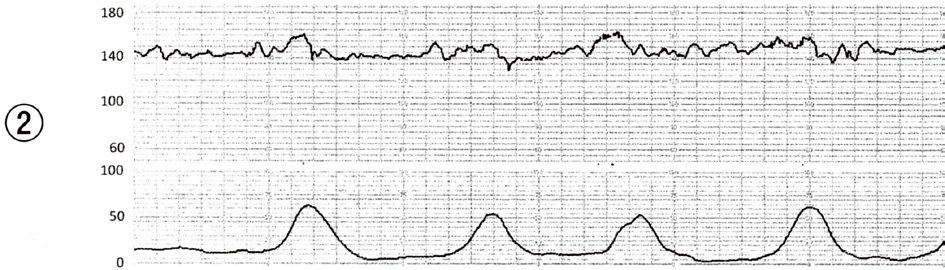
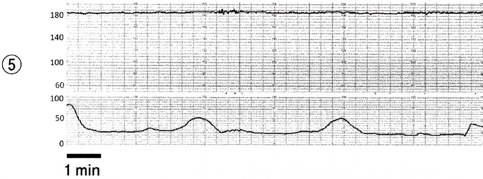

ａ ①
ｂ ②
ｃ ③
ｄ ④
ｅ ⑤
✅
ｂ ②
順調に進行する分娩で胎児心拍数パターンに異常がないので、心拍数基線正常・基線細変動あり・一過性徐脈なしの記録を選ぶ。
📸 「正常な胎児心拍数陣痛図」の条件
実際の画像は参照できないが、選ぶべき記録の条件は明確である。① 心拍数基線 110〜160bpm（徐脈・頻脈なし）
② 基線細変動 6〜25bpm（中等度）
③ 一過性頻脈を認める（またはあってよい）
④ 一過性徐脈を認めない
⑤ 子宮収縮曲線に規則的な陣痛を認める（分娩第1期活動期なので2〜3分間隔・持続40〜60秒程度）
「胎児心拍数パターンに異常を認めない」と明記されているので、一過性徐脈（早発・変動・遅発）や細変動の消失を示す記録はすべて除外し、「規則的な子宮収縮があるのに心拍は乱れない」記録を選ぶ。
🔍 誤りの記録を見分けるポイント
・心拍が平坦（細変動消失） → 最も危険。除外・収縮のたびに心拍が同時に下がる → 早発一過性徐脈（児頭圧迫、生理的だが「異常なし」ではない）
・収縮に遅れて心拍が下がる → 遅発一過性徐脈。除外
・急激に下がって急激に戻る、収縮と無関係 → 変動一過性徐脈。除外
・正弦波様 → サイナソイダルパターン（高度胎児貧血）。除外
・子宮収縮曲線が持続的に高いまま → 過強陣痛・常位胎盤早期剝離。除外
□ 胎児心拍数陣痛図の所見
| 所見 | 波形 | 原因 | 意義 |
|---|---|---|---|
| 早発一過性徐脈 | 子宮収縮と同時に始まり同時に回復（鏡像） | 児頭圧迫 → 迷走神経反射 | 生理的 |
| 変動一過性徐脈 | 急激に下降し急激に回復。収縮との時間関係が一定しない | 臍帯圧迫 | 軽度なら経過観察 |
| 遅発一過性徐脈 | 収縮より遅れて始まり収縮終了後に回復 | 子宮胎盤循環不全（早剝・過強陣痛・妊娠高血圧症候群） | 危険 |
| 遷延一過性徐脈 | 2分以上10分未満持続 | 臍帯脱出・過強陣痛・母体低血圧 | 危険 |
| サイナソイダルパターン | 規則的な正弦波様。細変動消失 | 高度胎児貧血 | 極めて危険 |
🎯 国試ポイント
CTGの判読はまず①基線 ②基線細変動 ③一過性頻脈 ④一過性徐脈の4項目をこの順で確認する。一過性徐脈の種類は必ず下段の子宮収縮曲線との時間関係で判定する（心拍波形だけでは判別不能）。
Q.220(107I-42)📷 画像82%
36 歳の2 回経妊1 回経産婦。妊娠39 週5 日。陣痛発来のため入院した。妊娠経過は順調であった。入院直後の内診では、分泌物は血性少量で子宮口は3cm 開大していた。1 時間後、突然の気分不快と持続性の腹痛とが出現した。その時の腹部超音波像（A）と胎児心拍数陣痛図（B）とを示す。
最も考えられるのはどれか。
最も考えられるのはどれか。
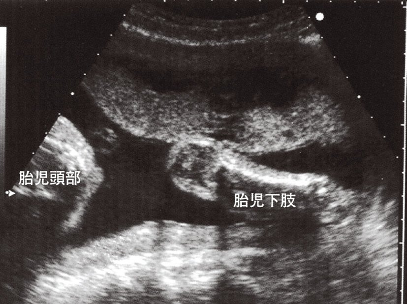
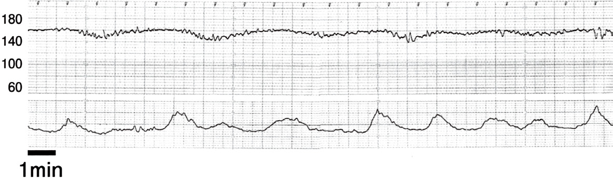
ａ 前置胎盤
ｂ 子宮破裂
ｃ 羊水塞栓症
ｄ HELLP 症候群
ｅ 常位胎盤早期剝離
✅
ｅ 常位胎盤早期剝離
陣痛発来後に突然の持続性腹痛と気分不快が出現し、胎盤肥厚と胎児機能不全を認める常位胎盤早期剝離である。
📸 画像の読み方
（A）腹部超音波像：胎盤の著明な肥厚（胎盤後血腫）。正常な胎盤厚は2〜3cm（B）胎児心拍数陣痛図：子宮収縮曲線の基線が持続的に上昇（子宮の板状硬）、基線細変動の減少・遅発一過性徐脈または遷延徐脈（胎児機能不全）
これらと臨床所見から常位胎盤早期剝離と診断する。
🚨 なぜ常位胎盤早期剝離か
・突然の持続性の腹痛（陣痛の間欠痛とは異なる）・気分不快 → 疼痛と出血によるショックの前兆
・胎盤の肥厚（胎盤後血腫）
・胎児機能不全
常位胎盤早期剝離は分娩開始後（陣痛発来後）にも発症する。子宮収縮が剝離の契機となりうる。
直ちに緊急帝王切開＋DICの評価と補充療法。
□ 選択肢の検討
| 選択肢 | 評価 |
|---|---|
| ａ 前置胎盤 | 否定的。前置胎盤は無痛性の出血。妊娠経過が順調で前置胎盤は指摘されていない |
| ｂ 子宮破裂 | 否定的。帝王切開・子宮手術の既往がない（2回経妊1回経産で経腟分娩歴）。子宮破裂では胎児部分を腹壁直下に触れ、超音波で胎盤肥厚は認めない |
| ｃ 羊水塞栓症 | 否定的。羊水塞栓症は突然の呼吸困難・チアノーゼ・心停止・DICを呈する。超音波での胎盤肥厚は説明できない |
| ｄ HELLP 症候群 | 否定的。溶血・肝酵素上昇・血小板減少を血液検査で診断する。右季肋部痛が特徴だが、超音波での胎盤肥厚は説明できない |
| ｅ 常位胎盤早期剝離 | 正しい |
🎯 国試ポイント
「持続性の腹痛」は陣痛（周期的な間欠痛）との対比で早剝を示唆するキーワード。常位胎盤早期剝離は妊娠中期以降いつでも、また分娩開始後にも発症しうる。
Q.221(106B-14)73%
娩出された胎盤の肉眼的観察が診断に重要でないのはどれか。
ａ 前置胎盤
ｂ 胎盤腫瘍
ｃ 分葉胎盤
ｄ 癒着胎盤
ｅ 常位胎盤早期剝離
✅
ａ 前置胎盤
前置胎盤は胎盤の付着部位の異常であり、娩出後の胎盤を見ても診断できない（分娩前の超音波で診断する）。
🔍 娩出された胎盤の肉眼的観察でわかること
分娩後は必ず胎盤・臍帯・卵膜を観察し、遺残と異常を確認する。・分葉胎盤・副胎盤：胎盤が2葉以上に分かれる。副胎盤の遺残は弛緩出血・子宮復古不全の原因となるため、卵膜に切れた血管がないか確認する
・癒着胎盤：胎盤母体面の脱落膜が欠損し、子宮筋層組織が付着している。用手剝離できず分割娩出された痕跡も手がかり
・常位胎盤早期剝離：胎盤母体面に凝血塊（胎盤後血腫）と圧痕を認める
・胎盤腫瘍：絨毛膜血管腫〈chorioangioma〉などの結節を肉眼で確認
・臍帯の異常（真結節・過捻転・卵膜付着・単一臍帯動脈）
・胎盤梗塞・石灰沈着（胎盤機能不全）
前置胎盤は「胎盤が子宮のどこに付いていたか（内子宮口を覆っていたか）」という付着部位の異常であり、娩出されて子宮から離れた胎盤を眺めても判定できない。診断は分娩前の経腟超音波検査による。
□ 選択肢の検討
| 選択肢 | 評価 |
|---|---|
| ａ 前置胎盤 | 診断できない。付着部位の異常であり、分娩前の経腟超音波で診断する |
| ｂ 胎盤腫瘍 | 診断できる。絨毛膜血管腫などの結節を肉眼で確認 |
| ｃ 分葉胎盤 | 診断できる。胎盤が複数の葉に分かれている |
| ｄ 癒着胎盤 | 診断できる。母体面に子宮筋層組織が付着、脱落膜の欠損 |
| ｅ 常位胎盤早期剝離 | 診断できる。母体面の凝血塊（胎盤後血腫）と圧痕 |
🎯 国試ポイント
分娩後の胎盤検査で副胎盤・胎盤片の遺残を見逃すと、弛緩出血・晩期産褥出血・子宮復古不全・子宮内膜炎の原因となる。卵膜の欠損や切断された血管の有無を必ず確認する。Q.222(106E-50)📷 画像90%
36 歳の1 回経妊1 回経産婦。妊娠32 週。昨夜からの少量の性器出血を主訴に来院した。自宅近くの医療機関で胎盤位置異常の可能性を指摘されたため、紹介されて受診した。32 歳時に自然経腟分娩で第1 子を出産している。腹部MRI のT2 強調矢状断像を示す。
胎盤はどれか。
胎盤はどれか。
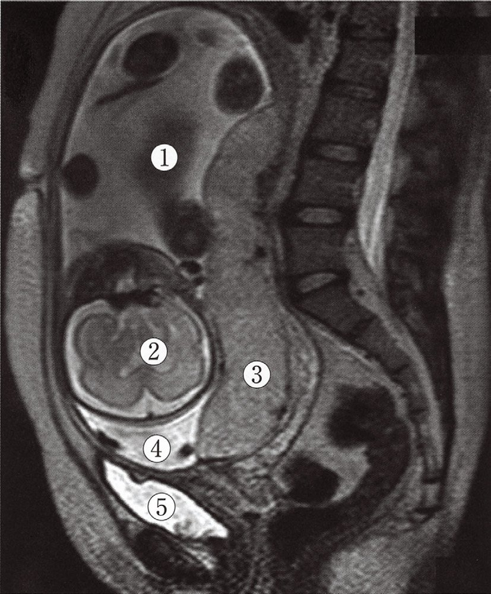
ａ ①
ｂ ②
ｃ ③
ｄ ④
ｅ ⑤
✅
ｃ ③
T2強調矢状断像で胎盤は子宮筋層より高信号で、内子宮口を覆う位置に描出される構造として同定する。
📸 骨盤MRI T2強調矢状断像の構造同定
実際の画像は参照できないが、妊娠子宮の矢状断で見える構造を前方（腹側）から後方（背側）へ整理する。・恥骨結合（最前方の低信号）
・膀胱：尿が貯留しT2で著明な高信号（真っ白）。三角形〜楕円形
・子宮筋層：中等度〜やや低信号の壁
・胎盤：子宮壁に接するやや高信号で不均一（絨毛間腔の血流を反映）な厚い構造。内部に低信号の中隔や血管を含む
・羊水：T2で均一な著明高信号（膀胱と同様に真っ白）
・胎児：羊水に囲まれた中等度信号の構造（骨は低信号）
・子宮頸管・内子宮口：子宮下端。頸管腺の粘液は高信号
・直腸・仙骨（最後方）
胎盤は「羊水（真っ白）ほど明るくなく、子宮筋層より明るい、子宮壁に沿う厚い層状構造」として同定する。本例では胎盤位置異常（前置胎盤）が疑われており、内子宮口を覆う位置にある構造を選ぶ。
□ MRI T2強調像での信号強度
| 構造 | T2強調像の信号 | 理由 |
|---|---|---|
| 羊水・膀胱内の尿 | 著明な高信号（白） | 自由水 |
| 胎盤 | 中〜高信号で不均一 | 絨毛間腔の血流 |
| 子宮筋層 | 中等度〜低信号 | 平滑筋 |
| 胎児の骨・恥骨 | 低信号（黒） | 皮質骨 |
| 脂肪 | 中〜高信号 | （T1では高信号） |
🎯 国試ポイント
前置胎盤の診断は経腟超音波が第一選択（簡便・安価・被曝なし）。MRIは癒着胎盤の評価（筋層への侵入の程度）や後壁付着例の評価に補助的に用いる。本例は経腟分娩の既往のみで帝王切開歴がなく、癒着胎盤のリスクは低い。
Q.223(106G-6)75%
臍帯脱出を起こしやすいのはどれか。
ａ 足 位
ｂ 微弱陣痛
ｃ 低在横定位
ｄ 不正軸進入
ｅ 羊水過少症
✅
ａ 足 位
足位では先進部が骨盤入口を密に塞がないため、破水時に臍帯が児より先に脱出しやすい。
🚨 臍帯脱出〈umbilical cord prolapse〉
破水後に臍帯が児の先進部より先に子宮口から脱出した状態。臍帯が先進部と骨盤壁の間で圧迫され、急激な胎児徐脈 → 数分で胎児死亡に至る産科救急である。危険因子＝先進部が骨盤入口をしっかり塞がない状況
・骨盤位（特に足位）：足は細く骨盤入口に隙間ができる（最も高リスク）
・横位・斜位
・児頭が高位のままの破水（未固定）
・早産・低出生体重児（児が小さい）
・羊水過多（破水時に大量の羊水とともに流出）
・多胎の第2子
・臍帯過長
対応：直ちに内診指で先進部を挙上して臍帯圧迫を解除し、骨盤高位（Trendelenburg位）・膝胸位として直ちに緊急帝王切開。臍帯を子宮内へ還納しようとしてはならない。
□ 選択肢の検討
| 選択肢 | 評価 |
|---|---|
| ａ 足位 | 正しい。先進部（足）が骨盤入口を塞がず隙間ができる |
| ｂ 微弱陣痛 | 分娩遷延の原因だが、臍帯脱出とは直接関係しない |
| ｃ 低在横定位 | 児頭が骨盤底で横向きのまま停止した回旋異常。児頭は下降しており臍帯脱出は起こりにくい |
| ｄ 不正軸進入 | 児頭の矢状縫合が骨盤軸からずれて進入する状態。分娩停止の原因だが臍帯脱出とは直結しない |
| ｅ 羊水過少症 | 逆。羊水が少なければ破水時に臍帯が流出しにくい。羊水過多が危険因子 |
🎯 国試ポイント
臍帯脱出は胎児死亡まで数分の超緊急事態。「破水直後の急激な胎児徐脈」をみたら臍帯脱出を疑い、内診で臍帯を触れれば確定。骨盤位は妊娠36〜37週の外回転術、または選択的帝王切開で対応することで臍帯脱出のリスクを避ける。
Q.224(106G-25)98%
胎児が健全であることを示唆するのはどれか。
ａ 羊水指数〈AFI〉1cm
ｂ 胎児心拍数基線90bpm
ｃ 臍帯動脈拡張期血流の途絶
ｄ 胎児心拍数基線細変動の消失
ｅ BPS〈biophysical profile score〉10 点
✅
ｅ BPS〈biophysical profile score〉10 点
BPS 10点は5項目すべてが正常であることを意味し、胎児well-beingが良好であることを示す。
🔍 BPS〈biophysical profile score〉
BPS〈biophysical profile score〉：胎児well-beingを総合評価する。各項目2点、計10点。① NST（一過性頻脈） ② 胎児呼吸様運動 ③ 胎動 ④ 胎児筋緊張 ⑤ 羊水量
・8〜10点：良好 → 経過観察
・6点：疑わしい → 24時間以内に再検
・4点以下：胎児機能不全 → 分娩を考慮
低酸素状態では中枢神経の成熟が遅い機能から順に失われる：
一過性頻脈（NST）→ 胎児呼吸様運動 → 胎動 → 筋緊張
（羊水量は慢性的な胎盤機能低下を反映する指標）
□ 選択肢の検討
| 選択肢 | 評価 |
|---|---|
| ａ 羊水指数〈AFI〉1cm | 異常。高度の羊水過少（基準5〜25cm）。慢性的な胎盤機能不全・胎児腎尿路異常・破水を示唆 |
| ｂ 胎児心拍数基線90bpm | 異常。徐脈（正常は110〜160bpm） |
| ｃ 臍帯動脈拡張期血流の途絶 | 異常。胎盤血管抵抗の著明な上昇を示し、胎盤機能不全・重症FGRの所見。拡張期血流の逆流（reverse flow）はさらに重篤で早急な娩出を要する |
| ｄ 胎児心拍数基線細変動の消失 | 最も危険。中枢神経の低酸素・アシドーシス |
| ｅ BPS 10 点 | 正しい。5項目すべて正常＝胎児well-being良好 |
🎯 国試ポイント
臍帯動脈血流波形（ドプラ）の評価：・正常：拡張期にも順行性の血流がある
・拡張期血流の途絶〈absent end-diastolic flow, AEDF〉：胎盤血管抵抗上昇
・拡張期血流の逆流〈reversed end-diastolic flow, REDF〉：最重症。早急な娩出
「胎盤を通り抜ける血流が拡張期に止まる（＝抵抗が高すぎる）」と理解する。
Q.225(105B-12)91%
破水について正しいのはどれか。
ａ 児頭娩出後に起こる。
ｂ 腟内のpH が低下する。
ｃ 微弱陣痛の原因になる。
ｄ 感染のリスクが増大する。
ｅ 前期破水は分娩第1 期に起こる。
✅
ｄ 感染のリスクが増大する。
破水すると腟から子宮内への上行感染の経路ができ、絨毛膜羊膜炎など感染のリスクが増大する。
💧 破水の分類と意義
破水の時期による分類・前期破水〈PROM〉：陣痛発来前の破水
うち妊娠37週未満のものをpreterm PROM〈PPROM〉という
・早期破水：陣痛発来後、子宮口全開大前の破水
・適時破水：子宮口全開大のころの破水（生理的）
・遅滞破水：全開大後も卵膜が破れない
破水の最大の問題は上行感染
卵膜という物理的バリアが失われ、腟内細菌が子宮内へ侵入して絨毛膜羊膜炎〈CAM〉 → 母体敗血症、新生児敗血症・肺炎・髄膜炎、脳室周囲白質軟化症〈PVL〉・脳性麻痺を来す。破水から時間が経つほどリスクが高まる。
このため破水後は内診の回数を最小限にし、体温・脈拍・白血球・CRP・CTGで感染を監視する。
長期の羊水過少が続けば肺低形成・四肢の関節拘縮（内反足）・臍帯圧迫も生じる。
□ 選択肢の検討
| 選択肢 | 評価 |
|---|---|
| ａ 児頭娩出後に起こる。 | 誤り。破水は児娩出前に起こる。（児が卵膜に包まれたまま娩出されるのは幸帽児） |
| ｂ 腟内のpH が低下する。 | 誤り。羊水は弱アルカリ性（pH 7.0〜8.5）なので、腟内へ流出すれば腟内pHは上昇する（BTB試験紙が青変する原理） |
| ｃ 微弱陣痛の原因になる。 | 誤り。むしろ破水はプロスタグランジン産生を促し陣痛を誘発・増強する |
| ｄ 感染のリスクが増大する。 | 正しい。上行感染による絨毛膜羊膜炎 |
| ｅ 前期破水は分娩第1 期に起こる。 | 誤り。前期破水は陣痛発来前（＝分娩開始前）の破水。分娩第1期（陣痛発来〜全開大）の破水は早期破水 |
💡 覚え方
「前期＝陣痛より前」「早期＝陣痛はあるが全開大より早い」「適時＝全開大のころ」。「前期破水は分娩第1期に起こる」という選択肢は、分娩第1期＝陣痛発来後という定義を知っていれば誤りとわかる。
Q.226(105E-52)95%
30 歳の初産婦。妊娠34 週に子宮内胎児発育遅延のため入院した。児頭の発育は保たれている。妊娠36 週に施行したノンストレステスト〈NST〉はnonreactive である。
次に行うべき検査として適切なのはどれか。
次に行うべき検査として適切なのはどれか。
ａ 羊水中L/S 比
ｂ 胎児心機能検査
ｃ 胎児血液ガス分析
ｄ 母体血中hCG 測定
ｅ BPS〈biophysical profile score〉
✅
ｅ BPS〈biophysical profile score〉
NSTがnon-reactiveでも直ちに分娩とせず、非侵襲的なBPSで胎児well-beingを総合評価する。
🔍 non-reactive NSTの次の一手はBPS
BPS〈biophysical profile score〉：胎児well-beingを総合評価する。各項目2点、計10点。① NST（一過性頻脈） ② 胎児呼吸様運動 ③ 胎動 ④ 胎児筋緊張 ⑤ 羊水量
・8〜10点：良好 → 経過観察
・6点：疑わしい → 24時間以内に再検
・4点以下：胎児機能不全 → 分娩を考慮
低酸素状態では中枢神経の成熟が遅い機能から順に失われる：
一過性頻脈（NST）→ 胎児呼吸様運動 → 胎動 → 筋緊張
（羊水量は慢性的な胎盤機能低下を反映する指標）
📊 本例の背景
・子宮内胎児発育遅延〈FGR〉で入院管理中・児頭の発育は保たれている → asymmetrical（不均衡型）FGR
低酸素・低栄養に対し、胎児は脳・心・副腎へ血流を優先的に配分する（brain sparing effect）。その結果、頭部の発育は保たれ腹囲が小さくなる。原因は胎盤機能不全・妊娠高血圧症候群など
・妊娠36週のNSTがnon-reactive
non-reactiveの原因には胎児の睡眠周期（最多）・未熟性・薬剤・真の胎児機能不全があり、偽陽性が非常に多い。したがってBPSで超音波所見（呼吸様運動・胎動・筋緊張・羊水量）を加えて総合評価する。
BPSが低値なら分娩へ、良好なら経過観察のうえ臍帯動脈血流波形なども併用して監視する。
□ 選択肢の検討
| 選択肢 | 評価 |
|---|---|
| ａ 羊水中L/S 比 | 不適切。胎児肺成熟度の評価であり、胎児well-beingの評価ではない。また羊水穿刺が必要で侵襲的 |
| ｂ 胎児心機能検査 | 胎児不整脈・心奇形を疑う場合の検査。本例の適応ではない |
| ｃ 胎児血液ガス分析 | 侵襲的。臍帯穿刺を要し、胎児死亡・出血・感染のリスク。非侵襲的評価を先に行う |
| ｄ 母体血中hCG 測定 | 無意味。胎児well-beingとは無関係 |
| ｅ BPS | 正しい。非侵襲的に胎児well-beingを総合評価 |
🎯 国試ポイント
FGRの分類：・symmetrical（均衡型）：頭部も体幹も小さい。妊娠早期からの障害（染色体異常・先天感染〈TORCH〉）
・asymmetrical（不均衡型）：頭部は保たれ腹囲が小さい。妊娠後期からの胎盤機能不全・妊娠高血圧症候群（brain sparing effect）
Q.227(104F-30)連問 1/291%
次の文を読み、227と228の問いに答えよ。
34 歳の経産婦。反復する下腹部痛と少量の性器出血とを主訴に来院した。
現病歴：妊娠12 週まで近くの診療所で健診を受けていたが、経済的理由でその後は受診していなかった。本日朝から下腹部痛と性器出血とを自覚した。妊娠37 週1 日に相当していた。既往歴・生活歴・家族歴：特記すべきことはない。
現 症：意識は清明。身長153cm、体重72kg。体温37.1℃。脈拍84/ 分、整。血圧142/86mmHg。子宮底長28cm、腹囲95cm。3 ～5 分間欠で疼痛を伴う子宮収縮を認める。
検査所見：尿所見：蛋白1 ＋、糖（－）。血液所見：赤血球320 万、Hb 9.5g/dl、Ht 28％、白血球9,000、血小板11 万。血液生化学所見：総蛋白6.5g/dl、アルブミン3.6g/dl、尿素窒素16mg/dl、クレアチニン0.6mg/dl。CRP 0.4mg/dl。
まず行う検査はどれか。
34 歳の経産婦。反復する下腹部痛と少量の性器出血とを主訴に来院した。
現病歴：妊娠12 週まで近くの診療所で健診を受けていたが、経済的理由でその後は受診していなかった。本日朝から下腹部痛と性器出血とを自覚した。妊娠37 週1 日に相当していた。既往歴・生活歴・家族歴：特記すべきことはない。
現 症：意識は清明。身長153cm、体重72kg。体温37.1℃。脈拍84/ 分、整。血圧142/86mmHg。子宮底長28cm、腹囲95cm。3 ～5 分間欠で疼痛を伴う子宮収縮を認める。
検査所見：尿所見：蛋白1 ＋、糖（－）。血液所見：赤血球320 万、Hb 9.5g/dl、Ht 28％、白血球9,000、血小板11 万。血液生化学所見：総蛋白6.5g/dl、アルブミン3.6g/dl、尿素窒素16mg/dl、クレアチニン0.6mg/dl。CRP 0.4mg/dl。
まず行う検査はどれか。
ａ 心電図
ｂ 頭部単純MRI
ｃ 腹部超音波検査
ｄ 凝固・線溶検査
ｅ 胸部エックス線撮影
✅
ｃ 腹部超音波検査
妊娠37週の妊婦の下腹部痛と性器出血であり、まず腹部超音波検査で胎盤・胎児・子宮の状態を評価する。
🔍 妊娠後期の腹痛＋性器出血の初期評価
本例は妊娠37週1日、反復する下腹部痛と少量の性器出血。血圧142/86mmHg・尿蛋白1＋があり妊娠高血圧腎症が疑われ、血小板11万、Hb 9.5g/dLとやや低い。この状況で鑑別すべきは
・常位胎盤早期剝離（妊娠高血圧症候群が最大の危険因子）
・前置胎盤
・分娩開始（産徴）
まず行うべきは腹部超音波検査である。
・胎盤の位置（前置胎盤か）と厚さ（胎盤後血腫による肥厚か）
・胎児の生死・推定体重・羊水量
・被曝がなく、ベッドサイドで即座に施行でき、以後の方針を決定づける
（なお本例は妊娠12週以降健診を受けておらず、胎盤位置も胎児発育も不明である点が重要）
□ 選択肢の検討
| 選択肢 | 評価 |
|---|---|
| ａ 心電図 | 母体に心疾患を疑う所見がない |
| ｂ 頭部単純MRI | 頭痛・けいれん・視覚異常など子癇を疑う所見がない |
| ｃ 腹部超音波検査 | 正しい。胎盤・胎児・羊水を非侵襲的に即座に評価できる |
| ｄ 凝固・線溶検査 | 常位胎盤早期剝離が疑われればDICの評価として必須だが、まず超音波で診断をつけるのが順序（並行して提出はする） |
| ｅ 胸部エックス線撮影 | 不適切。妊婦への被曝を避け、また呼吸器症状がない |
🎯 国試ポイント
妊娠後期の腹痛・出血ではまず腹部（経腹）超音波検査。前置胎盤を否定するまで内診（指診）は行わない。本例は子宮底長28cm（妊娠37週の基準は約32cm）とやや小さく、胎児発育不全も疑われる。
Q.228(104F-31)📷 画像連問 2/290%
（34歳の経産婦。妊娠37週1日。妊娠12週以降は未受診。反復する下腹部痛と少量の性器出血。身長153cm、体重72kg。体温37.1℃。脈拍84/分、整。血圧142/86mmHg。子宮底長28cm、腹囲95cm。3〜5分間欠で疼痛を伴う子宮収縮を認める。尿蛋白1＋。Hb 9.5g/dL、血小板11万。）
内診で、子宮口は2cm 開大、展退度40％、児頭の下降度はSP －2cm。未破水である。胎児心拍数陣痛図を示す。
対応として適切なのはどれか。
内診で、子宮口は2cm 開大、展退度40％、児頭の下降度はSP －2cm。未破水である。胎児心拍数陣痛図を示す。
対応として適切なのはどれか。
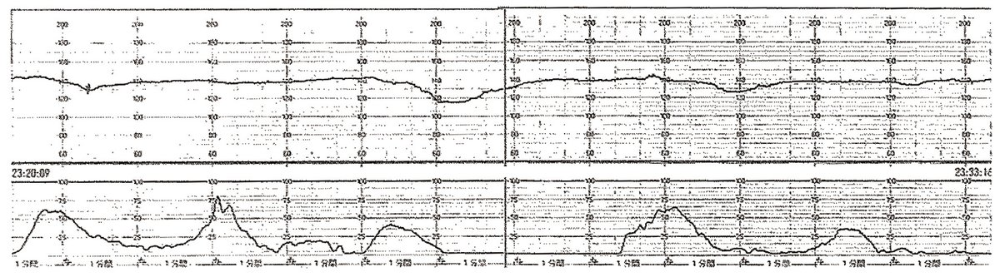
ａ 経過観察
ｂ 陣痛促進
ｃ 体位変換
ｄ 帝王切開
ｅ 羊水注入
✅
ｄ 帝王切開
胎児心拍数陣痛図で胎児機能不全を認め、子宮口2cm開大で経腟分娩に至るまで待てないため帝王切開を行う。
📸 胎児心拍数陣痛図の読み方
実際の記録は参照できないが、妊娠高血圧腎症を背景とする本例では基線細変動の減少と遅発一過性徐脈（子宮胎盤循環不全）を認めると読む。すなわち胎児機能不全である。前問の腹部超音波検査で胎盤の肥厚（胎盤後血腫）が確認されれば常位胎盤早期剝離と診断される。
🚨 なぜ帝王切開か
本例の状況：・妊娠高血圧腎症（血圧142/86mmHg、尿蛋白1＋） → 早剝の危険因子
・反復する下腹部痛（疼痛を伴う子宮収縮）と性器出血
・血小板11万・Hb 9.5g/dL → DICの初期・出血による貧血
・CTGで胎児機能不全
・内診：子宮口2cm開大、SP−2cm ＝ 分娩の進行は初期段階
胎児機能不全があり、経腟分娩の完了までには数時間を要する。その間に胎児は低酸素により死亡し、母体もDICが進行する。
したがって直ちに帝王切開で児を娩出させる（急速遂娩）。
□ 選択肢の検討
| 選択肢 | 評価 |
|---|---|
| ａ 経過観察 | 禁忌。胎児機能不全を放置すれば胎児死亡 |
| ｂ 陣痛促進 | 禁忌。子宮収縮を強めれば胎盤剝離を助長し、子宮胎盤循環がさらに悪化する |
| ｃ 体位変換 | 変動一過性徐脈（臍帯圧迫）や仰臥位低血圧症候群への対処。遅発一過性徐脈（子宮胎盤循環不全）の根本的解決にはならない |
| ｄ 帝王切開 | 正しい。胎児機能不全に対する急速遂娩 |
| ｅ 羊水注入 | 変動一過性徐脈（臍帯圧迫）に対する処置。未破水の本例では適応がない |
🎯 国試ポイント
急速遂娩（速やかに児を娩出させる）の方法選択：・子宮口全開大＋児頭下降（SP＋2cm以上）＋破水 → 吸引分娩・鉗子分娩
・上記を満たさない → 帝王切開
本例は子宮口2cm開大・SP−2cmであり帝王切開しかない。
Q.229(104G-38)88%
妊娠末期の胎児管理の指標として有用でないのはどれか。
ａ 胎 動
ｂ 羊水量
ｃ 胎児筋緊張
ｄ 胎児腸蠕動
ｅ ノンストレステスト〈NST〉
✅
ｄ 胎児腸蠕動
胎児腸蠕動は胎児well-beingの指標として用いられない（BPSの5項目に含まれない）。
🔍 胎児well-beingの評価指標
BPS〈biophysical profile score〉：胎児well-beingを総合評価する。各項目2点、計10点。① NST（一過性頻脈） ② 胎児呼吸様運動 ③ 胎動 ④ 胎児筋緊張 ⑤ 羊水量
・8〜10点：良好 → 経過観察
・6点：疑わしい → 24時間以内に再検
・4点以下：胎児機能不全 → 分娩を考慮
低酸素状態では中枢神経の成熟が遅い機能から順に失われる：
一過性頻脈（NST）→ 胎児呼吸様運動 → 胎動 → 筋緊張
（羊水量は慢性的な胎盤機能低下を反映する指標）
🚫 なぜ胎児腸蠕動は用いないか
胎児の腸管は妊娠中はほとんど内容物を輸送しておらず（胎便は結腸に貯留したまま出生後まで排出されない）、腸蠕動の有無は胎児の酸素化や中枢神経機能を反映しない。また超音波で安定して評価することも難しい。
これに対し胎動・筋緊張・呼吸様運動は胎児中枢神経の機能を直接反映し、低酸素で失われる。羊水量は慢性的な胎盤機能（胎児腎血流）を反映する。
□ 選択肢の検討
| 選択肢 | 評価 |
|---|---|
| ａ 胎動 | 有用。BPSの1項目。母体の胎動自覚も重要なスクリーニング |
| ｂ 羊水量 | 有用。BPSの1項目。慢性的な胎盤機能不全を反映 |
| ｃ 胎児筋緊張 | 有用。BPSの1項目。四肢の屈曲・伸展運動 |
| ｄ 胎児腸蠕動 | 有用でない。胎児のwell-beingを反映しない |
| ｅ NST | 有用。BPSの1項目。一過性頻脈の有無 |
Q.230(103A-21)60%
38 歳の経産婦。妊娠41 週。陣痛発来と破水とを主訴に来院した。入院3 時間後の内診で子宮口は6 cm 開大。胎児心拍数陣痛図で、陣痛周期は1 分30 秒、持続時間は60 秒、心拍数基線は160bpm、基線細変動は10bpm、遅発一過性徐脈を示している。
まず投与するのはどれか。
まず投与するのはどれか。
ａ インドメタシン
ｂ 塩酸リトドリン
ｃ オキシトシン
ｄ プロスタグランディンF2α
ｅ 硫酸マグネシウム
✅
ｂ 塩酸リトドリン
過強陣痛による子宮胎盤循環不全（遅発一過性徐脈）であり、子宮収縮抑制薬の塩酸リトドリンで陣痛を弱める。
⚡ 過強陣痛と遅発一過性徐脈
本例の陣痛は周期1分30秒・持続時間60秒。→ 子宮の弛緩している時間はわずか30秒しかない。
子宮が収縮している間は子宮筋層を貫くらせん動脈が圧迫され、絨毛間腔への血流が途絶する。弛緩期に血流が回復して胎児は酸素を受け取るのだが、弛緩期が短すぎると回復が間に合わず、胎児は収縮のたびに低酸素に陥る。
これが遅発一過性徐脈（子宮胎盤循環不全）として現れる。
さらに心拍数基線160bpm（頻脈の境界）・基線細変動10bpm（減少傾向）も胎児のストレスを示す。
治療：まず子宮収縮を抑える
・塩酸リトドリン（β₂刺激薬）の投与で子宮を弛緩させる（子宮内蘇生）
・オキシトシン（陣痛促進薬）を使用中なら直ちに中止
・並行して体位変換（左側臥位）・酸素投与・輸液
・改善しなければ急速遂娩
□ 選択肢の検討
| 選択肢 | 評価 |
|---|---|
| ａ インドメタシン | 不適切。子宮収縮抑制作用はあるが胎児動脈管の収縮を招く。妊娠41週では特に危険 |
| ｂ 塩酸リトドリン | 正しい。β₂刺激薬で子宮を弛緩させ、子宮胎盤血流を回復させる |
| ｃ オキシトシン | 禁忌。陣痛促進薬であり、過強陣痛をさらに強めて胎児を危険にさらす |
| ｄ PGF2α | 禁忌。同じく子宮収縮薬 |
| ｅ 硫酸マグネシウム | 子宮収縮抑制作用はあるが、子癇の予防・治療が主な適応。急速な子宮弛緩を得る目的にはβ₂刺激薬が適する |
🎯 国試ポイント
正答率60%。過強陣痛 → 子宮胎盤循環不全 → 遅発一過性徐脈という因果を理解していれば、「陣痛を弱める薬」を選べる。胎児機能不全に対する子宮内蘇生〈intrauterine resuscitation〉：
①体位変換（左側臥位） ②酸素投与 ③輸液 ④子宮収縮薬の中止／子宮収縮抑制薬 ⑤（変動徐脈なら）人工羊水注入。
Q.231(103B-49)📷 画像2択54%
33 歳の初産婦。妊娠41 週1 日。子宮収縮の増強を主訴に入院した。胎児心拍数陣痛図を示す。
正しいのはどれか。2 つ選べ。
正しいのはどれか。2 つ選べ。
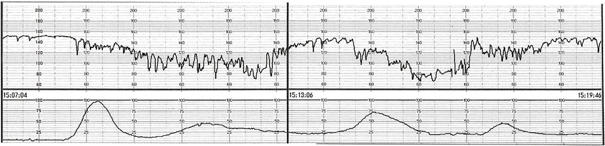
ａ 心拍数基線は正常範囲内である。
ｂ 心拍数基線細変動は消失している。
ｃ 一過性頻脈を認める。
ｄ 早発一過性徐脈を認める。
ｅ 遷延一過性徐脈を認める。
✅
ａ 心拍数基線は正常範囲内である。
ｅ 遷延一過性徐脈を認める。
心拍数基線は110〜160bpmの正常範囲にあり、2分以上持続する遷延一過性徐脈を認める。
📸 胎児心拍数陣痛図の読み方
実際の記録は参照できないが、判読の手順に沿って読む。① 心拍数基線：110〜160bpmの正常範囲
② 基線細変動：保たれている（消失していない）
③ 一過性頻脈：認めない
④ 一過性徐脈：2分以上10分未満持続する徐脈＝遷延一過性徐脈
遷延一過性徐脈〈prolonged deceleration〉
・15bpm以上の心拍数低下が2分以上10分未満持続する
・10分以上続けば「徐脈（基線の変化）」と判定する
・原因：臍帯脱出・臍帯圧迫・過強陣痛・常位胎盤早期剝離・母体低血圧（仰臥位低血圧症候群・硬膜外麻酔）・子宮破裂
・危険な所見であり、原因の除去と急速遂娩の準備を行う
□ 一過性徐脈の鑑別
| 所見 | 波形 | 原因 | 意義 |
|---|---|---|---|
| 早発一過性徐脈 | 子宮収縮と同時に始まり同時に回復（鏡像） | 児頭圧迫 → 迷走神経反射 | 生理的 |
| 変動一過性徐脈 | 急激に下降し急激に回復。収縮との時間関係が一定しない | 臍帯圧迫 | 軽度なら経過観察 |
| 遅発一過性徐脈 | 収縮より遅れて始まり収縮終了後に回復 | 子宮胎盤循環不全（早剝・過強陣痛・妊娠高血圧症候群） | 危険 |
| 遷延一過性徐脈 | 2分以上10分未満持続 | 臍帯脱出・過強陣痛・母体低血圧 | 危険 |
| サイナソイダルパターン | 規則的な正弦波様。細変動消失 | 高度胎児貧血 | 極めて危険 |
□ 選択肢の検討
| 選択肢 | 評価 |
|---|---|
| ａ 心拍数基線は正常範囲内である。 | 正しい。110〜160bpm |
| ｂ 心拍数基線細変動は消失している。 | 誤り。細変動は保たれている（消失していれば最も危険な所見） |
| ｃ 一過性頻脈を認める。 | 誤り。一過性頻脈（15bpm以上・15秒以上の上昇）は認めない |
| ｄ 早発一過性徐脈を認める。 | 誤り。早発一過性徐脈は子宮収縮と同時に始まり同時に回復する短い徐脈。本問の徐脈は長く持続する |
| ｅ 遷延一過性徐脈を認める。 | 正しい。2分以上10分未満の徐脈 |
🎯 国試ポイント
徐脈の分類は持続時間で決まる：・一過性徐脈（早発・変動・遅発）：数十秒〜2分未満
・遷延一過性徐脈：2分以上10分未満
・徐脈（基線の異常）：10分以上
正答率54%と低いのは、細変動の有無と徐脈の持続時間を同時に読む必要があるため。
Q.232(103I-78)68%
28 歳の2 回経産婦。妊娠35 週。交通事故による腹部打撲のため搬入された。意識は清明。体温37.2℃。脈拍92/ 分、整。血圧120/80mmHg。胎児心拍数90bpm。痛みを伴う持続的な子宮収縮と性器出血とを認める。
最も考えられるのはどれか。
最も考えられるのはどれか。
ａ 早 産
ｂ 子宮破裂
ｃ 前置胎盤
ｄ 絨毛膜羊膜炎
ｅ 常位胎盤早期剝離
✅
ｅ 常位胎盤早期剝離
腹部外傷を契機とする持続的な子宮収縮・性器出血・胎児徐脈であり、常位胎盤早期剝離である。
🚗 腹部外傷と常位胎盤早期剝離
腹部打撲（交通事故・転倒・DV）は常位胎盤早期剝離の重要な危険因子である。子宮は弾性に富むが胎盤は伸展性に乏しいため、外力で子宮が変形すると子宮壁と胎盤の間にずれが生じて剝離する。
本例の所見：
・痛みを伴う持続的な子宮収縮（間欠のない疼痛＝板状硬）
・性器出血
・胎児心拍数90bpm（徐脈） → 胎児機能不全
常位胎盤早期剝離と診断し、直ちに緊急帝王切開＋DICの評価。
母体のバイタルは安定しているが、早剝の出血は子宮内に貯留するため、外出血が少なくても大量に失血していることがある。
□ 選択肢の検討
| 選択肢 | 評価 |
|---|---|
| ａ 早産 | 規則的な陣痛と頸管熟化が主体。持続的な子宮収縮・胎児徐脈は説明できない |
| ｂ 子宮破裂 | やや否定的。帝王切開・子宮手術の既往が最大の危険因子だが記載がない。子宮破裂では胎児部分を腹壁直下に触れ、子宮収縮が突然消失（陣痛の消失）するのが特徴 |
| ｃ 前置胎盤 | 否定的。前置胎盤は無痛性の出血で、外傷が契機になるものではない |
| ｄ 絨毛膜羊膜炎 | 否定的。体温37.2℃で発熱なく、外傷という契機と合わない |
| ｅ 常位胎盤早期剝離 | 正しい |
🎯 国試ポイント
妊婦の腹部外傷では受傷直後は無症状でも、数時間後に常位胎盤早期剝離を発症しうる。軽症でも最低4〜6時間（可能なら24時間）のCTG監視を行う。RhD陰性妊婦では胎児母体間輸血による感作を防ぐため抗D人免疫グロブリンを投与する。
Q.233(102G-12)📷 画像59%
胎児心拍数陣痛図を示す。
心拍数陣痛パターンと最も関係するのはどれか。
心拍数陣痛パターンと最も関係するのはどれか。
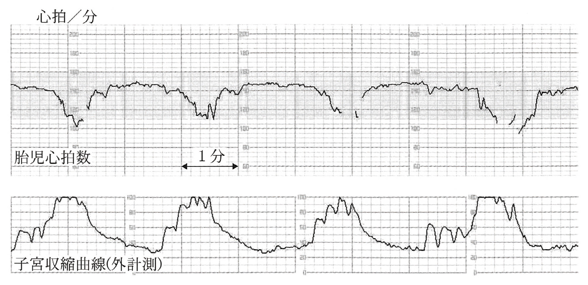
ａ 臍帯圧迫
ｂ 児頭圧迫
ｃ 羊水過多
ｄ 子宮破裂
ｅ 常位胎盤早期剝離
✅
ｂ 児頭圧迫
子宮収縮と同時に始まり同時に回復する早発一過性徐脈であり、児頭圧迫による迷走神経反射である。
📸 胎児心拍数陣痛図の読み方
実際の記録は参照できないが、正答から早発一過性徐脈〈early deceleration〉と読む。早発一過性徐脈の特徴
・子宮収縮の開始と同時に徐脈が始まり、収縮のピークで最下点、収縮の終了とともに回復する
・子宮収縮曲線と心拍数曲線が鏡像（mirror image）をなす
・徐脈は緩やかで、心拍数の低下も軽度（多くは100bpm以上を保つ）
・基線細変動は保たれる
💓 機序：児頭圧迫 → 迷走神経反射
子宮収縮のたびに児頭が産道（骨盤・頸管）で圧迫される。→ 頭蓋内圧が一過性に上昇
→ 迷走神経（副交感神経）が反射性に刺激される
→ 心拍数が低下（徐脈）
→ 収縮が終わり圧迫が解除されると心拍数は戻る
生理的な反射であり、胎児低酸素を意味しない。分娩第1期後半〜第2期（児頭が下降し産道を通過する時期）にしばしばみられる。処置は不要で、経過観察してよい。
□ 選択肢の検討
| 選択肢 | 評価 |
|---|---|
| ａ 臍帯圧迫 | 変動一過性徐脈の原因（急激に下降・回復、収縮と無関係） |
| ｂ 児頭圧迫 | 正しい。早発一過性徐脈（迷走神経反射） |
| ｃ 羊水過多 | CTGの特定のパターンと結びつかない |
| ｄ 子宮破裂 | 遷延一過性徐脈・徐脈（胎児の急激な低酸素） |
| ｅ 常位胎盤早期剝離 | 遅発一過性徐脈・基線細変動減少（子宮胎盤循環不全） |
💡 覚え方
「早発は頭（児頭圧迫、生理的）／変動は臍（臍帯圧迫）／遅発は胎盤（子宮胎盤循環不全）」。正答率59%。「徐脈＝異常」と早合点しがちだが、早発一過性徐脈は正常所見である点が要点。
Q.234(101B-90)2択30%
妊娠30 週の胎児診断の組合せで適切なのはどれか。2 つ選べ。
ａ 水頭症 ─────────── CT
ｂ 心奇形 ─────────── MRI
ｃ 低酸素血症 ───────── コントラクションストレステスト〈CST〉
ｄ 染色体異常 ───────── 絨毛検査
ｅ 胎児発育遅延 ──────── 超音波検査
✅
ｃ 低酸素血症 ───────── コントラクションストレステスト〈CST〉
ｅ 胎児発育遅延 ──────── 超音波検査
コントラクションストレステストは胎児の低酸素血症を、超音波検査は胎児発育遅延を評価する。
🔍 妊娠30週の胎児評価
コントラクションストレステスト〈CST〉オキシトシンまたは乳頭刺激で人為的に子宮収縮を起こし、その負荷に胎児が耐えられるか（遅発一過性徐脈が出現しないか）をみる検査。
子宮収縮のたびに絨毛間腔への血流が途絶するので、胎盤の予備能が低ければ遅発一過性徐脈が出現＝陽性（低酸素血症を示唆）。
NSTがnon-reactiveのときの二次検査。切迫早産・前置胎盤・帝王切開既往では禁忌。
超音波検査
胎児推定体重（BPD・AC・FL）を計測し、同週数の平均−1.5SD未満なら胎児発育不全〈FGR〉と診断する。妊娠中期以降の発育評価の唯一の方法。
□ 選択肢の検討
| 選択肢 | 評価 |
|---|---|
| ａ 水頭症 ─ CT | 不適切。胎児への電離放射線被曝は避ける。水頭症は超音波（側脳室拡大）で診断し、必要なら胎児MRI |
| ｂ 心奇形 ─ MRI | 不適切。心奇形の評価は胎児心エコー（超音波）。胎児MRIは心拍動が速く、心臓の描出には向かない |
| ｃ 低酸素血症 ─ CST | 正しい。子宮収縮負荷に対する胎児の予備能を評価 |
| ｄ 染色体異常 ─ 絨毛検査 | 時期が不適切。絨毛検査は妊娠11〜14週。妊娠30週では絨毛（＝胎盤）を穿刺することになり、この時期の染色体検査は羊水検査・臍帯穿刺で行う |
| ｅ 胎児発育遅延 ─ 超音波検査 | 正しい。推定体重の計測 |
🎯 国試ポイント
正答率30%と非常に低い。妊娠中の画像検査は超音波が基本、MRIは補助（非造影）、CT・X線は避けるという原則と、侵襲的検査は週数によって使い分ける（絨毛11〜14週／羊水15〜16週以降／臍帯穿刺18週以降）を両方問う問題。CSTはNSTと対で覚える：NST＝負荷なし（一過性頻脈を見る）、CST＝収縮負荷（遅発徐脈が出ないか見る）。
Q.235(101F-4)83%
癒着胎盤の危険因子とならないのはどれか。
ａ 子宮奇形
ｂ 前置胎盤
ｃ 子宮内膜症
ｄ 帝王切開術の既往
ｅ 子宮内容除去術の既往
✅
ｃ 子宮内膜症
子宮内膜症は子宮内膜組織が子宮外に存在する病態であり、癒着胎盤の危険因子ではない。
🩸 癒着胎盤〈placenta accreta spectrum〉の危険因子
癒着胎盤は脱落膜（Nitabuch層）の欠損部に胎盤が付着し、絨毛が子宮筋層へ直接侵入する病態。危険因子＝子宮内膜（脱落膜）が欠損・瘢痕化する状況
・帝王切開の既往（最重要。1回で約3%、2回で約10%、3回以上で40%超）
・子宮内容除去術・掻爬の既往（内膜の基底層が損傷）
・前置胎盤（子宮下節は脱落膜が乏しい。帝切既往と重なると激増）
・子宮筋腫核出術・子宮鏡手術の既往
・Asherman症候群（子宮腔癒着）
・子宮奇形（中隔部などは脱落膜が乏しい）
・高齢・多産・喫煙・生殖補助医療
子宮内膜症は子宮内膜組織が子宮外（卵巣・腹膜・Douglas窩）に異所性に存在する病態で、子宮腔内の脱落膜には影響しない。不妊・月経困難症の原因ではあるが、癒着胎盤の危険因子ではない。
□ 選択肢の検討
| 選択肢 | 評価 |
|---|---|
| ａ 子宮奇形 | 危険因子。中隔などの部位は脱落膜が乏しい |
| ｂ 前置胎盤 | 危険因子。子宮下節は脱落膜が乏しい |
| ｃ 子宮内膜症 | 危険因子でない。子宮外の異所性内膜であり、子宮腔内の脱落膜には無関係 |
| ｄ 帝王切開術の既往 | 危険因子。最も重要 |
| ｅ 子宮内容除去術の既往 | 危険因子。内膜基底層の損傷 |
🎯 国試ポイント
子宮内膜症（endometriosis）と子宮腺筋症（adenomyosis）とAsherman症候群（子宮腔癒着）を混同しないこと。癒着胎盤の危険因子となるのは子宮腔内の内膜（脱落膜）が失われる病態・手術である。
Q.236(100G-87)
胎児心拍数陣痛図で、変動一過性徐脈と最も関係するのはどれか。
ａ 児頭圧迫
ｂ 肺低形成
ｃ 臍帯圧迫
ｄ 先天性心疾患
ｅ 胎盤循環不全
✅
ｃ 臍帯圧迫
変動一過性徐脈は臍帯圧迫によって生じる。
💓 変動一過性徐脈〈variable deceleration〉
波形：急激に下降し急激に回復する（V字・W字・U字型）。子宮収縮との時間的関係が一定しない（variable）。機序：臍帯圧迫
① まず壁の薄い臍帯静脈が閉塞 → 胎児への還流が減少 → 一過性の心拍数上昇（shoulder）
② 圧迫が強まると臍帯動脈も閉塞 → 胎児の末梢血管抵抗が急上昇 → 血圧上昇
③ 圧受容器が感知し迷走神経反射で急激な徐脈
④ 圧迫が解除されると急激に回復
臍帯圧迫を起こしやすい状況：羊水過少・破水後・臍帯巻絡・臍帯脱出・臍帯過長・分娩第2期の児頭下降
対応：軽度・散発的なら経過観察。高度・反復すれば体位変換（側臥位）・酸素投与・人工羊水注入、基線細変動の減少を伴えば急速遂娩。
□ 一過性徐脈の鑑別
| 所見 | 波形 | 原因 | 意義 |
|---|---|---|---|
| 早発一過性徐脈 | 子宮収縮と同時に始まり同時に回復（鏡像） | 児頭圧迫 → 迷走神経反射 | 生理的 |
| 変動一過性徐脈 | 急激に下降し急激に回復。収縮との時間関係が一定しない | 臍帯圧迫 | 軽度なら経過観察 |
| 遅発一過性徐脈 | 収縮より遅れて始まり収縮終了後に回復 | 子宮胎盤循環不全（早剝・過強陣痛・妊娠高血圧症候群） | 危険 |
| 遷延一過性徐脈 | 2分以上10分未満持続 | 臍帯脱出・過強陣痛・母体低血圧 | 危険 |
| サイナソイダルパターン | 規則的な正弦波様。細変動消失 | 高度胎児貧血 | 極めて危険 |
□ 選択肢の検討
| 選択肢 | 評価 |
|---|---|
| ａ 児頭圧迫 | 早発一過性徐脈の原因（迷走神経反射、生理的） |
| ｂ 肺低形成 | CTGの特定のパターンとは結びつかない |
| ｃ 臍帯圧迫 | 正しい。変動一過性徐脈 |
| ｄ 先天性心疾患 | 胎児不整脈を来しうるが、変動一過性徐脈の原因ではない |
| ｅ 胎盤循環不全 | 遅発一過性徐脈の原因 |
💡 覚え方
「早発は頭（児頭圧迫）／変動は臍（臍帯圧迫）／遅発は胎盤（子宮胎盤循環不全）／サイナソイダルは血（胎児貧血）」。この対応関係はCh5に繰り返し登場する（Q196・Q203・Q216・Q233・本問）。